[!IMPORTANT] Mundo 2 · Memória e dados · Rota do jogo: etapa 5 de 29
Missão: guardar vários valores juntos e trabalhar com texto.
Vem de: Módulo 04 · Funções e modularização. Segue para: Módulo 06 · Ponteiros.
Checkpoints desta fase:
- Ler os assuntos 0037 a 0043 e refazer os exemplos
- Resolver os 4 exercícios de cada assunto, escrevendo o código sozinho
- Fechar a lista prática (P0501 a P0530)
- Enfrentar os desafios do módulo
- Chefão: resolver as questões de prova do módulo sem consultar
A primeira estrutura de dados do curso: o vetor, e com ele matrizes,
caracteres e strings (vetor de char terminado em '\0'). Depende dos laços
e das funções dos módulos 03 e 04 e prepara o 06, de ponteiros.
const protege<ctype.h>'\0', o <string.h> e o estouro de bufferfgets, o '\n' e por que o gets foi banidoNos desenhos, o índice de cada gaveta fica embaixo, em cinza. Ponteiros ainda não aparecem: quando o texto disser "vai o endereço do vetor", guarde a ideia para o módulo 06.
O AddressSanitizer, ativo nas flags de estudo, confere índice e tamanho de
string. Diante de stack-buffer-overflow, leia a linha indicada: quase sempre
é um <= no lugar de < ou um '\0' sem lugar.
| # | Assunto |
|---|---|
| 0037 | Vetores |
| 0038 | Vetores e funções |
| 0039 | Matrizes |
| 0040 | Caracteres |
| 0041 | Strings |
| 0042 | Lendo strings |
| 0043 | Juntando tudo |
[!NOTE] Cada assunto é um capítulo: Conceito (a explicação), Exemplos de uso (programas que compilam sozinhos: rode com o comando abaixo de cada um e compare com a saída no fim do código) e Exercícios (cada um é um arquivo em
material/com o esqueleto, as dicas e o espaço para a resposta; resoluções em_respostas/05-vetores-e-strings/).
O relógio da academia contou seus passos na semana: 8200 no domingo, 10450 na
segunda, e assim por diante. Para somar, tirar a média e achar o recorde, você
precisaria de sete variáveis, passos_dom, passos_seg e as outras. No mês
seriam trinta; no ano, 365. Cada nova variável pede uma linha nova de soma, e
nenhum laço consegue andar por nomes diferentes. Falta um jeito de dar um nome
só a um grupo de valores e escolher um deles por número.
Pense num armário de escritório com gavetas numeradas. O armário tem um nome na porta, e cada gaveta guarda uma coisa do mesmo tipo. Para pegar uma pasta, você diz o nome do armário e o número da gaveta. Em C, esse armário é o vetor (array, também chamado de arranjo): um conjunto de variáveis do mesmo tipo, com um nome só, guardadas lado a lado na memória. Por ter todos os itens do mesmo tipo, ele é um dado composto homogêneo; a struct do módulo 08, que junta tipos diferentes, é o caso heterogêneo (TENENBAUM; LANGSAM; AUGENSTEIN, 1995, cap. 1).
int passos[7]; // 7 gavetas de int, com lixo dentro
int notas[4] = {7, 9, 6, 10}; // declara e inicializa
int zeros[100] = {0}; // a 1ª vira 0 e as outras também
int dias[] = {31, 28, 31}; // sem tamanho: o compilador conta (3)
A declaração diz o tipo, o nome e, entre colchetes, quantas gavetas o vetor
tem. Para chegar a uma gaveta, você escreve o nome e o índice, a posição
entre colchetes: passos[0] é a primeira, passos[6] é a última. O índice
vai de 0 a tamanho - 1, então num vetor de 7 não existe passos[7]. Ele
pode ser qualquer expressão inteira, como v[i + 1] ou v[n - 1], e é isso
que casa o vetor com o for: o contador do laço vira o número da gaveta
(DEITEL; DEITEL, 2011, cap. 6).
Contar a partir de 0 parece estranho, mas tem um motivo concreto. As 7
gavetas de int ocupam 28 bytes seguidos (7 × 4). O nome do vetor marca o
começo desse bloco, e o índice diz quantos itens pular a partir dali:
passos[5] fica no começo mais 5 × 4 bytes. O primeiro item não pula nada,
por isso é o 0. A mesma conta explica por que ler v[0] ou v[999] custa o
mesmo tempo: é uma multiplicação e uma soma, sem percorrer nada (BACKES, 2013,
cap. 6).
Cada gaveta se comporta como uma variável comum. Ela entra em conta, em if,
em printf e em scanf("%d", ¬as[i]). A diferença está só no jeito de
nomeá-la.
O tamanho do vetor é fixo: você o decide na declaração e ele não cresce
depois. Por isso vale guardar o tamanho num #define, como #define DIAS 7:
se a semana virar mês, você muda um número e o laço acompanha. Desde o C99 o
tamanho pode vir de uma variável (int v[n];), o VLA do assunto 0172, mas
ele também não cresce depois de criado (DEITEL; DEITEL, 2011, cap. 6).
Para dar valores na declaração, use chaves. Se você listar menos valores que
gavetas, as que sobram recebem 0, e é assim que {0} zera um vetor inteiro.
Se deixar os colchetes vazios, o compilador conta os valores e decide o
tamanho. As chaves só valem na declaração: passos = {1, 2}; numa linha
depois não compila (DEITEL; DEITEL, 2011, cap. 6).
O vetor também não guarda o próprio tamanho; quem sabe quantas gavetas existem
é você. No mesmo bloco em que o vetor foi declarado, sizeof(v) / sizeof(v[0]) faz a conta: os bytes do vetor inteiro divididos pelos bytes de
um item (KERNIGHAN; RITCHIE, 1989, cap. 5). O assunto 0038 mostra por que essa
conta falha dentro de uma função.
Por fim, um vetor não se copia com =. A linha copia = passos; não compila,
porque o nome do vetor não é uma variável que se possa trocar de lugar. Para
copiar, ande pelas gavetas num laço e copie uma por uma (BACKES, 2013, cap. 6).
[!WARNING] O C não confere o índice.
v[7] = 0numint v[7]compila e mexe na memória vizinha, talvez em outra variável sua. É comportamento indefinido: pode não acontecer nada, pode mudar outro valor ou derrubar o programa. O erro clássico é oi <= 7no laço, que passa uma vez a mais; o AddressSanitizer mostrastack-buffer-overflow.
O relógio contou os passos da semana: 7 gavetas, uma por dia. O laço soma e guarda a maior; o recorde está na gaveta 5, o dia 6 do relatório:
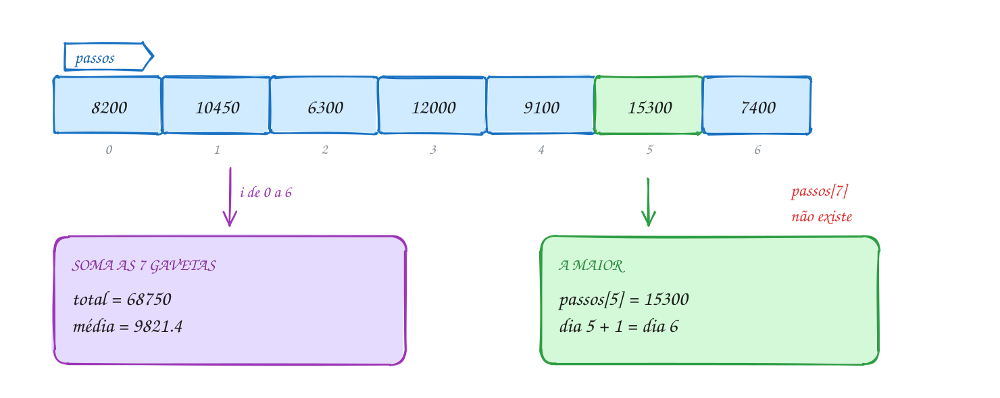
#include <stdio.h>
#define DIAS 7
int main(void) {
// 7 gavetas de int, uma por dia; o índice vai de 0 a 6
int passos[DIAS] = {8200, 10450, 6300, 12000, 9100, 15300, 7400};
int total = 0;
int maior = passos[0]; // começa pelo primeiro, não por 0
int dia_maior = 0;
for (int i = 0; i < DIAS; i++) { // i < DIAS: o último índice é 6
total += passos[i];
if (passos[i] > maior) {
maior = passos[i];
dia_maior = i;
}
}
printf("Total: %d passos\n", total);
printf("Média: %.1f por dia\n", (double) total / DIAS);
printf("Recorde: %d passos no dia %d\n", maior, dia_maior + 1);
return 0;
}
// Saída:
// Total: 68750 passos
// Média: 9821.4 por dia
// Recorde: 15300 passos no dia 6
É o acumulador e o maior/menor do assunto 0025, com os valores vindos do vetor;
i < 7? impede o laço de passar da última gaveta:
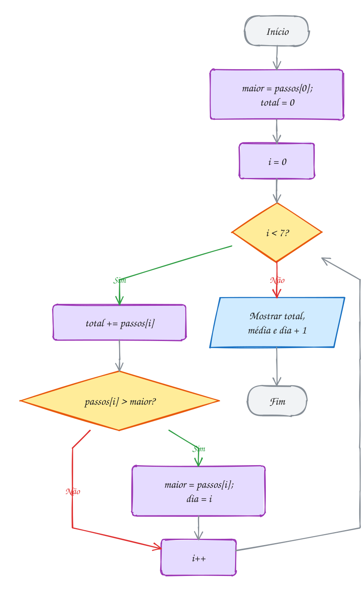
Exemplo A073 · O hidrômetro e a gaveta vizinha
#include <stdio.h>
#define LEITURAS 8
int main(void) {
// o relógio d'água só acumula: cada leitura é o total desde a instalação
int leitura[LEITURAS] = {1520, 1690, 1830, 2075, 2210, 2300, 2510, 2640};
int maior = 0; // aqui 0 serve: consumo nunca é negativo
int dia_maior = 0;
// 8 leituras dão 7 dias de consumo: i vai até LEITURAS - 2,
// porque o laço lê a gaveta vizinha, leitura[i + 1]
for (int i = 0; i < LEITURAS - 1; i++) {
int consumo = leitura[i + 1] - leitura[i];
printf("Dia %d: %d litros\n", i + 1, consumo);
if (consumo > maior) {
maior = consumo;
dia_maior = i + 1;
}
}
// a primeira e a última gaveta dão o total, sem somar nada
printf("Na semana: %d litros\n", leitura[LEITURAS - 1] - leitura[0]);
printf("Pico: dia %d, com %d litros\n", dia_maior, maior);
return 0;
}
// Saída:
// Dia 1: 170 litros
// Dia 2: 140 litros
// Dia 3: 245 litros
// Dia 4: 135 litros
// Dia 5: 90 litros
// Dia 6: 210 litros
// Dia 7: 130 litros
// Na semana: 1120 litros
// Pico: dia 3, com 245 litros
gcc ~/LPEDC/material/A073.c -o ~/LPEDC/material/A073 && ~/LPEDC/material/A073
Exemplo A074 · Inicializar, contar e copiar
#include <stdio.h>
int main(void) {
// só 3 valores para 6 gavetas: as outras 3 viram 0
int gols[6] = {2, 0, 3};
// sem tamanho: o compilador conta os valores (5)
int precos[] = {12, 7, 30, 4, 18};
int n = sizeof(precos) / sizeof(precos[0]); // bytes do vetor / bytes de um item
printf("gols: ");
for (int i = 0; i < 6; i++) {
printf("%d ", gols[i]);
}
printf("\n");
printf("precos tem %d itens em %zu bytes\n", n, sizeof(precos));
// copia = precos; não compila: vetor se copia gaveta por gaveta
int copia[5];
for (int i = 0; i < n; i++) {
copia[i] = precos[i];
}
copia[0] = 99; // mexer na cópia não mexe no original
printf("precos[0] = %d, copia[0] = %d\n", precos[0], copia[0]);
return 0;
}
// Saída:
// gols: 2 0 3 0 0 0
// precos tem 5 itens em 20 bytes
// precos[0] = 12, copia[0] = 99
gcc ~/LPEDC/material/A074.c -o ~/LPEDC/material/A074 && ~/LPEDC/material/A074
Exercício E217 · ★☆☆
A estação meteorológica de Curitiba registrou as máximas de uma semana: 19, 23, 21, 17, 15, 18 e 22 graus. Guarde as sete temperaturas num vetor e mostre-as de trás para frente, do último dia para o primeiro, cada uma com o número do dia (1 a 7).
Saída esperada:
Dia 7: 22 graus
Dia 6: 18 graus
Dia 5: 15 graus
Dia 4: 17 graus
Dia 3: 21 graus
Dia 2: 23 graus
Dia 1: 19 graus
Exercício E219 · ★★☆
Um professor quer saber quem ficou acima da média da turma. Leia as notas de 5 alunos (números reais), calcule a média e liste o número do aluno (1 a 5) e a nota de quem ficou ACIMA dela, com uma casa decimal. Se o scanf falhar, mostre "Entrada inválida." e termine com return 1.
Entrada:
7.5
4
9
6
8.5
Saída esperada:
Média da turma: 7.00
Acima da média:
Aluno 1: 7.5
Aluno 3: 9.0
Aluno 5: 8.5
Exercício E220 · ★★☆
Um app de delivery recebeu 15 avaliações, de 1 a 5 estrelas:
5 4 5 3 5 1 4 5 2 4 5 3 4 5 5
Conte quantas avaliações teve cada nota e desenhe um histograma com asteriscos, da nota 5 para a nota 1. Não use if nem switch para contar: use a própria nota como índice de um vetor de contadores.
Saída esperada:
Nota 5: ******* (7)
Nota 4: **** (4)
Nota 3: ** (2)
Nota 2: * (1)
Nota 1: * (1)
Exercício E222 · ★★★
O Crivo de Eratóstenes acha todos os primos até N sem fazer nenhuma divisão. Com N = 50:
1. Crie um vetor de bool com 51 posições (índices 0 a 50), todas true.
2. Marque 0 e 1 como false (não são primos).
3. Para cada p de 2 em diante: se p ainda está true, ele é primo; então
marque como false todos os múltiplos de p a partir de p * p
(p*p, p*p + p, p*p + 2p, ... até 50).
4. Pode parar quando p * p passar de 50.
No fim, mostre os primos e quantos são.
Saída esperada:
2 3 5 7 11 13 17 19 23 29 31 37 41 43 47
15 primos até 50
A lanchonete da esquina vai reajustar o cardápio em 10%. A coxinha de
R$ 12,50 passa a R$ 13,75 e o suco de R$ 8,00 vai para R$ 8,80. Você escreve
uma função reajustar e passa a ela o vetor de preços. A pergunta é: ela
mexe nos preços do main ou numa cópia deles?
No assunto 0029 você viu que o C passa argumentos por valor: a função
recebe uma cópia e o original fica intacto. Com vetor a regra é outra. O C
nunca copia um vetor inteiro para dentro da função; ele entrega o endereço
em que o vetor começa (DEITEL; DEITEL, 2011, cap. 6). Pense em emprestar a
chave do armário em vez de fazer um armário igual: quem recebe a chave abre
as mesmas gavetas. Por isso a função escreve no vetor original, e a coxinha
do main passa mesmo a custar R$ 13,75.
No parâmetro, o vetor aparece com colchetes vazios; na chamada, vai só o nome, sem colchetes e sem índice:
void reajustar(double precos[], int n, double percentual); // protótipo
reajustar(cardapio, 4, 10); // chamada
Um número dentro dos colchetes do parâmetro não muda nada: double precos[4], double precos[100] e double precos[] são a mesma coisa para o
compilador, que ignora o número (BACKES, 2013, cap. 9). Prefira os colchetes
vazios, que não prometem um tamanho que ninguém confere.
Repare no int n do protótipo. Como só o endereço chega à função, o tamanho
do vetor fica para trás, e a função não tem como descobri-lo sozinha. Então o
tamanho viaja num parâmetro à parte. Esse par, vetor mais tamanho, aparece no
curso inteiro, em toda função de busca e de ordenação (BACKES, 2013, cap. 9).
Às vezes a função só precisa ler o vetor, como uma que mostra o cardápio na
tela. Nesse caso, marque o parâmetro com const: void mostrar(const double precos[], int n). O const é uma promessa conferida pelo compilador.
Se alguém escrever precos[0] = 0; dentro de mostrar, a compilação falha,
e o erro aparece antes de estragar algum preço (DEITEL; DEITEL, 2011, cap. 6).
Um item sozinho do vetor segue a regra antiga. Em aplicar(cardapio[0]), a
função recebe uma cópia do double que está na gaveta 0, como receberia
qualquer outro número; mudar essa cópia não muda o cardápio (DEITEL; DEITEL,
2011, cap. 6).
Passar o endereço também tem a ver com custo. Na chamada, o frame da função
(assunto 0031) recebe um endereço de 8 bytes, um int e um double; os
bytes do vetor continuam no frame do main. Passar um vetor de 4 itens ou de
um milhão custa os mesmos 8 bytes. No módulo 06 esse endereço ganha nome,
ponteiro, e double precos[] vira só outro jeito de escrever um ponteiro
(KERNIGHAN; RITCHIE, 1989, cap. 5).
[!WARNING]
sizeofdentro da função não dá o tamanho do vetor. Nomain,sizeof(cardapio)vale 32 (4 × 8 bytes). Emreajustar,sizeof(precos)vale 8, o tamanho de um endereço, e o laço anda 1 item em vez de 4. O gcc avisa (-Wsizeof-array-argument); passe o tamanho como parâmetro.
A lanchonete reajusta o cardápio em 10%. A função recebe o endereço de
cardapio em precos, e cada precos[i] é a mesma gaveta que cardapio[i]:
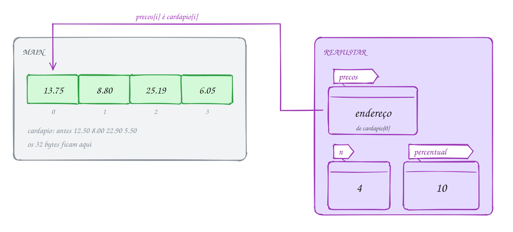
#include <stdio.h>
#define ITENS 4
// const: esta função promete só ler o vetor
void mostrar(const double precos[], int n) {
for (int i = 0; i < n; i++) {
printf("R$ %6.2f\n", precos[i]);
}
}
// sem const: esta função escreve nas gavetas do vetor de quem chamou
void reajustar(double precos[], int n, double percentual) {
for (int i = 0; i < n; i++) {
precos[i] = precos[i] * (1 + percentual / 100);
}
}
int main(void) {
double cardapio[ITENS] = {12.50, 8.00, 22.90, 5.50};
reajustar(cardapio, ITENS, 10); // vai o vetor (sem colchetes) e o tamanho
printf("Depois do reajuste de 10%%:\n");
mostrar(cardapio, ITENS);
return 0;
}
// Saída:
// Depois do reajuste de 10%:
// R$ 13.75
// R$ 8.80
// R$ 25.19
// R$ 6.05
A função é void, mas o main enxerga os preços novos, porque ela escreveu
direto no vetor dele:
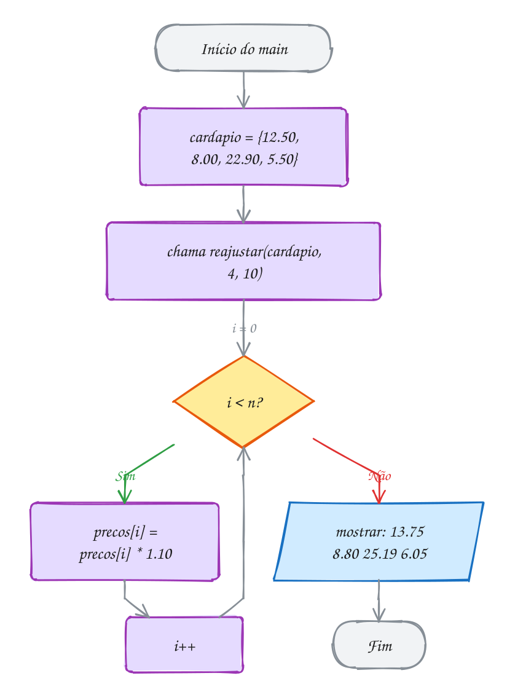
Exemplo A075 · Um vetor entra, outro sai cheio
#include <stdio.h>
// lê as notas (const) e escreve o resultado em aprovado[], que é do main
void corrigir(const double notas[], int aprovado[], int n, double minima) {
for (int i = 0; i < n; i++) {
aprovado[i] = notas[i] >= minima; // 1 ou 0
}
}
int contar(const int v[], int n) {
int total = 0;
for (int i = 0; i < n; i++) {
total += v[i];
}
return total;
}
int main(void) {
// duas turmas de tamanhos diferentes: a função é a mesma
double manha[5] = {7.5, 4.0, 6.0, 9.5, 5.9};
double noite[3] = {8.0, 6.5, 3.0};
int ok_manha[5]; // a função preenche: não precisa inicializar
int ok_noite[3];
corrigir(manha, ok_manha, 5, 6.0);
corrigir(noite, ok_noite, 3, 6.0);
printf("Manhã: %d de 5 aprovados\n", contar(ok_manha, 5));
printf("Noite: %d de 3 aprovados\n", contar(ok_noite, 3));
// a função só olha as n primeiras gavetas que você mandar
printf("Só os 2 primeiros da manhã: %d\n", contar(ok_manha, 2));
return 0;
}
// Saída:
// Manhã: 3 de 5 aprovados
// Noite: 2 de 3 aprovados
// Só os 2 primeiros da manhã: 1
gcc ~/LPEDC/material/A075.c -o ~/LPEDC/material/A075 && ~/LPEDC/material/A075
Exemplo A076 · Um elemento vai por valor, o vetor vai pelo endereço
#include <stdio.h>
#define N 5
// devolve a posição do código no vetor, ou -1 se não achar
int buscar(const int codigos[], int n, int alvo) {
for (int i = 0; i < n; i++) {
if (codigos[i] == alvo) {
return i;
}
}
return -1;
}
// recebe UMA quantidade: é uma cópia, como qualquer int
void baixa_na_copia(int quantidade) {
quantidade = quantidade - 1;
}
// recebe o vetor: mexe nas gavetas de quem chamou
void baixa_no_vetor(int estoque[], int pos) {
estoque[pos] = estoque[pos] - 1;
}
int main(void) {
int codigos[N] = {101, 205, 310, 422, 587};
int estoque[N] = {8, 3, 12, 0, 5};
int pos = buscar(codigos, N, 310);
printf("Código 310 na posição %d, estoque %d\n", pos, estoque[pos]);
baixa_na_copia(estoque[pos]); // vai o valor 12
printf("Depois de baixa_na_copia: %d\n", estoque[pos]);
baixa_no_vetor(estoque, pos); // vai o vetor
printf("Depois de baixa_no_vetor: %d\n", estoque[pos]);
printf("Código 999: posição %d\n", buscar(codigos, N, 999));
return 0;
}
// Saída:
// Código 310 na posição 2, estoque 12
// Depois de baixa_na_copia: 12
// Depois de baixa_no_vetor: 11
// Código 999: posição -1
gcc ~/LPEDC/material/A076.c -o ~/LPEDC/material/A076 && ~/LPEDC/material/A076
Exercício E223 · ★☆☆
O time da várzea marcou estes gols nas 8 rodadas do campeonato:
3 1 0 2 4 1 2 3
Escreva duas funções e use as duas no main:
int soma(const int v[], int n); devolve a soma dos n itens
double media(const int v[], int n); devolve a média (use a soma)
Saída esperada:
Gols no campeonato: 16
Média por rodada: 2.00
Exercício E225 · ★★☆
A função mexer abaixo recebe um vetor e um int. Uma das duas mudanças que ela faz chega ao main; a outra se perde. Mostre isso na tela:
1. No fim de mexer, acrescente um printf que mostre v[0], v[1], v[2] e x
(formato "dentro: ...", como na saída esperada).
2. No main, troque os dois printf pelos do formato "fora: ...".
3. Escreva void vezes_dez(int v[], int pos), que multiplica por 10 só a
gaveta pos do vetor, e use no fim do main para multiplicar a[2] de
verdade (coisa que mexer(a, a[2]) não fez).
Saída esperada:
dentro: v = 10 50 3, x = 50
fora: a = 10 50 3, b = 5
dentro: v = 100 30 3, x = 30
fora: a = 100 30 3
depois de vezes_dez: a = 100 30 30
Exercício E226 · ★★☆
As contas de luz do ano (janeiro a dezembro), em reais:
182.40 175.10 190.75 168.30 150.20 141.90
139.60 144.80 158.25 171.40 189.90 205.35
Escreva três funções, todas recebendo o vetor e o tamanho:
int indice_do_maior(const double v[], int n);
double media(const double v[], int n);
int contar_acima(const double v[], int n, double limite);
e use as três para mostrar:
Saída esperada:
Mês mais caro: 12 (R$ 205.35)
Média mensal: R$ 168.16
Meses acima da média: 7
Exercício E228 · ★★★
Uma playlist guarda os números das faixas: 11 22 33 44 55. Escreva:
void mostrar(const int v[], int n);
void inverter(int v[], int n); inverte NO PRÓPRIO vetor, sem criar
outro: troca o 1º com o último, o 2º
com o penúltimo...
void rotacionar(int v[], int n); a 1ª faixa vai para o fim e as outras
andam uma casa para a esquerda
No main: mostre a playlist, inverta e mostre, depois rotacione DUAS vezes e mostre.
Saída esperada:
11 22 33 44 55
55 44 33 22 11
33 22 11 55 44
Uma rede de açaí tem 3 lojas e quer comparar as vendas de 4 semanas. Na planilha, cada loja ocupa uma linha e cada semana uma coluna; o total da loja fica no fim da linha e o da semana no pé da coluna. Um vetor só dá conta de uma linha. Para a planilha inteira, você precisa de um nome para a tabela e de dois números para achar uma célula.
Em C, essa tabela é a matriz, um vetor de vetores, também chamada de
vetor bidimensional. Em int vendas[3][4], o primeiro número diz quantas
linhas existem e o segundo quantos itens cada linha tem: são 3 linhas, e cada
uma é um vetor de 4 int (BACKES, 2013, cap. 6). A imagem certa é a de uma
estante: 3 prateleiras, cada uma com 4 caixas.
int vendas[3][4]; // 12 int com lixo
int m[2][3] = {{1, 2, 3}, {4, 5, 6}}; // uma chave por linha
int z[2][3] = {{1}, {4, 5}}; // o que falta vira 0: 1 0 0 / 4 5 0
int t[][2] = {{1, 2}, {3, 4}, {5, 6}}; // só a 1ª dimensão pode sumir: 3 linhas
Para chegar a uma célula, você usa dois índices, primeiro a linha, depois a
coluna, e os dois começam em 0. vendas[2][0] é a loja 3 na semana 1. Cada
célula se comporta como uma variável comum, igual às gavetas do vetor
(DEITEL; DEITEL, 2011, cap. 6).
Na inicialização, cada linha ganha o seu par de chaves. Como no vetor, o que
você não listar vira 0: em z, a primeira linha fica 1 0 0 e a segunda
4 5 0. Dá para deixar vazia só a primeira dimensão, a das linhas, e o
compilador conta quantas chaves internas você escreveu; a das colunas é
obrigatória (DEITEL; DEITEL, 2011, cap. 6). Também é possível omitir as
chaves internas e escrever os seis valores seguidos, que enchem a matriz
linha por linha, mas o gcc avisa (-Wmissing-braces). Use as chaves: elas
mostram a forma da tabela.
Dois índices pedem dois laços aninhados (assunto 0024). O laço de fora escolhe a linha; o de dentro anda pelas colunas daquela linha. Assim você soma o total de cada loja. Para somar por semana, inverta a ordem: a coluna por fora, a linha por dentro (BACKES, 2013, cap. 6).
A memória, porém, não tem linhas nem colunas: é uma fila só de bytes. O C
guarda a matriz como um bloco contínuo, linha após linha, arranjo chamado
de row-major. As 12 células de vendas ficam enfileiradas: a linha 0
inteira, depois a linha 1, depois a 2. A célula vendas[l][s] é o item
l × 4 + s da fila; vendas[1][2] é o item 6, o sétimo (KERNIGHAN; RITCHIE,
1989, cap. 5).
Essa conta tem duas consequências. A primeira aparece quando a matriz vai
para uma função. Como no vetor, vai só o endereço do começo, mas a função
precisa saber quantas colunas cada linha tem para fazer a conta l × 4 + s.
Por isso o parâmetro exige todas as dimensões menos a primeira: int m[][4]
(DEITEL; DEITEL, 2011, cap. 6). A segunda é de desempenho. Percorrer linha
por linha lê bytes vizinhos, que o processador já trouxe para o cache, a
memória pequena e rápida que fica dentro dele. Percorrer coluna por coluna
pula 16 bytes a cada passo e, numa matriz grande, deixa o programa bem mais
lento, com o mesmo resultado.
[!WARNING] Escreva
m[l][c], nuncam[l, c]: a vírgula é um operador que descarta o da esquerda, em[1, 2]viram[2], a linha inteira. E não troque os limites: comint m[3][4], o laço das linhas vai até 3 e o das colunas até 4. Trocados, o laço lêm[3][...], fora da matriz.
Uma rede de açaí compara 3 lojas em 4 semanas. As 12 células ficam
enfileiradas, linha após linha; vendas[1][2] (o 14) está na posição
1 × 4 + 2 = 6:
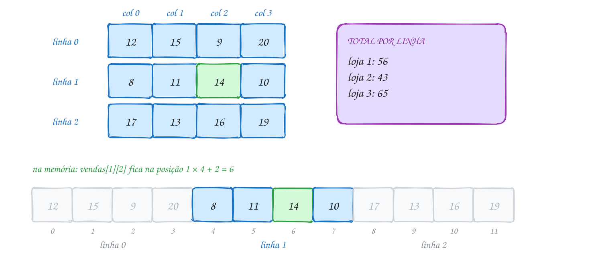
#include <stdio.h>
#define LOJAS 3
#define SEMANAS 4
int main(void) {
// 3 linhas (lojas) x 4 colunas (semanas): caixas de açaí vendidas
int vendas[LOJAS][SEMANAS] = {
{12, 15, 9, 20},
{8, 11, 14, 10},
{17, 13, 16, 19},
};
printf(" S1 S2 S3 S4 Total\n");
for (int l = 0; l < LOJAS; l++) { // uma volta por linha
int total_loja = 0;
printf("Loja %d", l + 1);
for (int s = 0; s < SEMANAS; s++) { // uma volta por coluna
printf("%4d", vendas[l][s]);
total_loja += vendas[l][s];
}
printf("%7d\n", total_loja);
}
int geral = 0;
printf("Semana");
for (int s = 0; s < SEMANAS; s++) { // agora a coluna fica por fora
int total_semana = 0;
for (int l = 0; l < LOJAS; l++) {
total_semana += vendas[l][s];
}
printf("%4d", total_semana);
geral += total_semana;
}
printf("%7d\n", geral);
return 0;
}
// Saída:
// S1 S2 S3 S4 Total
// Loja 1 12 15 9 20 56
// Loja 2 8 11 14 10 43
// Loja 3 17 13 16 19 65
// Semana 37 39 39 49 164
O laço de dentro dá 4 voltas para cada volta do de fora: o corpo roda 3 × 4 = 12 vezes:
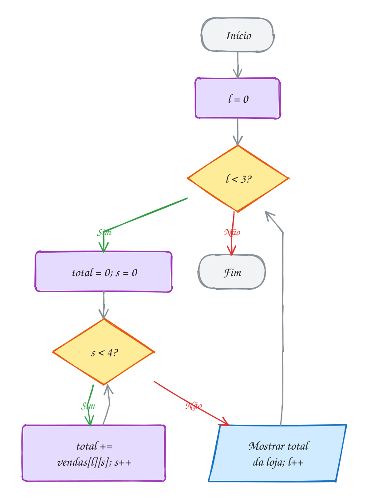
Exemplo A077 · O primeiro horário livre da agenda
#include <stdio.h>
#include <stdbool.h>
#define DIAS 5
#define HORARIOS 4
int main(void) {
// linhas: segunda a sexta; colunas: 8h, 10h, 14h, 16h (1 = marcado)
int agenda[DIAS][HORARIOS] = {
{1, 1, 1, 1},
{1, 1, 1, 1},
{1, 1, 1, 1},
{1, 0, 1, 0},
{0, 0, 1, 1},
};
int horas[HORARIOS] = {8, 10, 14, 16};
// busca em duas dimensões: o laço de fora para assim que achar
bool achou = false;
int dia = 0, hora = 0;
for (int l = 0; l < DIAS && !achou; l++) {
for (int c = 0; c < HORARIOS && !achou; c++) {
if (agenda[l][c] == 0) {
achou = true;
dia = l;
hora = c;
}
}
}
if (achou) {
printf("Primeiro livre: dia %d às %dh\n", dia + 1, horas[hora]);
// na memória, as linhas vêm uma atrás da outra:
// a casa [l][c] é a de número l * HORARIOS + c, contando do 0
printf("É a casa %d das %d da matriz\n", dia * HORARIOS + hora, DIAS * HORARIOS);
} else {
printf("Agenda lotada.\n");
}
printf("A matriz ocupa %zu bytes: %d int seguidos\n", sizeof(agenda), DIAS * HORARIOS);
return 0;
}
// Saída:
// Primeiro livre: dia 4 às 10h
// É a casa 13 das 20 da matriz
// A matriz ocupa 80 bytes: 20 int seguidos
gcc ~/LPEDC/material/A077.c -o ~/LPEDC/material/A077 && ~/LPEDC/material/A077
Exemplo A078 · O tabuleiro do jogo da velha
#include <stdio.h>
#include <stdbool.h>
#define N 3
// no parâmetro, só a 1ª dimensão pode ficar vazia: [][N]
// (sem const: com matriz, o const só é aceito sem aviso a partir do C23)
void desenhar(char t[][N], int linhas) {
for (int l = 0; l < linhas; l++) {
printf(" %c | %c | %c\n", t[l][0], t[l][1], t[l][2]);
if (l < linhas - 1) {
printf("---+---+---\n");
}
}
}
// a diagonal principal é onde linha == coluna
bool ganhou_na_diagonal(char t[][N], char jogador) {
for (int i = 0; i < N; i++) {
if (t[i][i] != jogador) {
return false;
}
}
return true;
}
int main(void) {
char tabuleiro[N][N] = {
{'X', 'O', '.'},
{'O', 'X', '.'},
{'.', 'O', 'X'},
};
desenhar(tabuleiro, N);
printf("X ganhou na diagonal? %s\n", ganhou_na_diagonal(tabuleiro, 'X') ? "sim" : "não");
printf("A matriz ocupa %zu bytes; cada linha, %zu\n", sizeof(tabuleiro), sizeof(tabuleiro[0]));
return 0;
}
// Saída:
// X | O | .
// ---+---+---
// O | X | .
// ---+---+---
// . | O | X
// X ganhou na diagonal? sim
// A matriz ocupa 9 bytes; cada linha, 3
gcc ~/LPEDC/material/A078.c -o ~/LPEDC/material/A078 && ~/LPEDC/material/A078
Exercício E229 · ★☆☆
Um quadrado mágico 3x3 tem a mesma soma em todas as linhas, colunas e nas duas diagonais. Guarde este numa matriz, mostre-o e calcule a soma da diagonal principal (de cima à esquerda até embaixo à direita) e a da diagonal secundária (de cima à direita até embaixo à esquerda):
2 7 6
9 5 1
4 3 8
Saída esperada:
2 7 6
9 5 1
4 3 8
Diagonal principal: 15
Diagonal secundária: 15
Exercício E231 · ★★☆
A academia guarda, numa matriz 2x3, quantos alunos foram em cada turno (linhas: segunda e terça; colunas: manhã, tarde e noite):
40 25 60
35 30 55
O gerente quer a planilha "deitada": uma linha por turno e uma coluna por dia. Isso é a TRANSPOSTA. Monte uma matriz 3x2 t em que t[c][l] = m[l][c] e mostre as duas.
Saída esperada:
Original (2x3):
40 25 60
35 30 55
Transposta (3x2):
40 35
25 30
60 55
Exercício E232 · ★★☆
Uma sala de cinema pequena tem 5 fileiras (A a E) de 6 poltronas. Na matriz, 1 é ocupada e 0 é livre:
1 1 0 1 1 1
0 0 1 1 0 0
1 1 1 1 1 1
0 1 0 0 0 1
1 0 0 1 1 0
Mostre o mapa com 'X' para ocupada e '.' para livre, o número de lugares livres em cada fileira e a fileira com MAIS lugares livres (em caso de empate, a primeira).
Saída esperada:
A X X . X X X livres: 1
B . . X X . . livres: 4
C X X X X X X livres: 0
D . X . . . X livres: 4
E X . . X X . livres: 3
Melhor fileira: B
Exercício E234 · ★★★
Campo minado! Num campo 4x5, 1 é bomba e 0 é livre:
0 1 0 0 0
0 0 0 1 0
1 1 0 0 0
0 0 0 0 1
Mostre o campo "aberto": '*' onde há bomba e, nas outras casas, quantas bombas existem nas até 8 casas vizinhas (incluindo as diagonais).
Saída esperada:
1 * 2 1 1
3 3 3 * 1
* * 2 2 2
2 2 1 1 *
No app do Detran, você digita a placa em minúsculas, bra2e19, e ele mostra
BRA2E19 e confere o formato: três letras, um dígito, uma letra, dois
dígitos. Para isso o programa precisa saber que b é letra, que 2 é dígito
e qual é a maiúscula de b. Antes de juntar caracteres em textos, vale
entender o que um caractere é para o computador.
A resposta curta: caractere é número. O tipo char guarda um inteiro de
1 byte, e cada símbolo tem um código combinado numa tabela, a tabela
ASCII. É como o número de chamada de uma turma: a professora fala "17" e
todo mundo sabe quem é. Na ASCII, 'A' é 65, 'B' é 66, 'a' é 97, '0' é
48, o espaço é 32 e o '\n' é 10. As aspas simples só escrevem esse número de
um jeito legível: 'A' e 65 são o mesmo valor (DEITEL; DEITEL, 2011,
cap. 8).
| símbolos | códigos | repare |
|---|---|---|
'0' a '9' |
48 a 57 | em ordem: '7' - '0' = 7 |
'A' a 'Z' |
65 a 90 | em ordem alfabética |
'a' a 'z' |
97 a 122 | cada minúscula = maiúscula + 32 |
Quem decide o que aparece na tela é o printf. Com %c ele mostra o
símbolo; com %d, o código. Como o char é número, dá para fazer conta e
comparar: 'a' + 1 é 'b', e c >= 'A' && c <= 'Z' pergunta se c é uma
maiúscula. A conta mais útil é c - '0': como os dígitos estão em ordem a
partir do 48, ela transforma o caractere '7' no número 7 (BACKES, 2013,
cap. 7). A tabela mostra outra regularidade: cada minúscula fica 32 posições
depois da sua maiúscula.
Fazer essas contas na mão funciona, mas o <ctype.h> já traz as funções
prontas. Há testes, que respondem sim ou não: isalpha (é letra?),
isdigit (é dígito?), isalnum (letra ou dígito?), isspace (espaço, \t
ou \n?), isupper, islower e ispunct (pontuação?). E há conversões:
toupper devolve a maiúscula e tolower a minúscula. O que não é letra volta
igual, então toupper('2') é '2' (DEITEL; DEITEL, 2011, cap. 8).
Os testes seguem a regra do C para verdadeiro: qualquer valor diferente de
zero. Eles não prometem devolver 1; podem devolver 8 ou 1024. Por isso
escreva if (isdigit(c)), nunca if (isdigit(c) == 1), que pode falhar
mesmo quando c é um dígito (LINUX MAN-PAGES PROJECT, s.d.).
Para ler um caractere do teclado, existe o getchar(). Ele devolve um
int, e não um char, porque precisa de um valor a mais: além dos 256
códigos possíveis, ele pode devolver EOF, um número negativo que avisa
que a entrada acabou (Ctrl+D no Linux). Guarde o resultado num int, ou o
EOF pode se confundir com um caractere de verdade (DEITEL; DEITEL, 2011,
cap. 8).
Acento pede um cuidado. O C não garante se o char tem sinal; no x86 ele vai
de -128 a 127. No UTF-8, o "ç" ocupa dois bytes (0xC3 0xA7) e não cabe
num char. Num char com sinal, esses bytes viram números negativos, e
passar um negativo que não seja EOF às funções do <ctype.h> é
comportamento indefinido. O jeito seguro é converter antes:
toupper((unsigned char) c) (CPPREFERENCE, s.d.).
[!WARNING] Letra não é "tudo entre
'A'e'z'": entre o'Z'(90) e o'a'(97) ficam[ \ ] ^ _e a crase, então esse teste aceita_como letra. Useisalpha(c). E não confunda'0'(o caractere zero, código 48) com0(o número zero, que é o caractere nulo'\0').
A placa bra2e19 vira BRA2E19: o toupper troca cada minúscula pela
maiúscula, 32 posições antes na tabela, e os dígitos passam sem mudar:
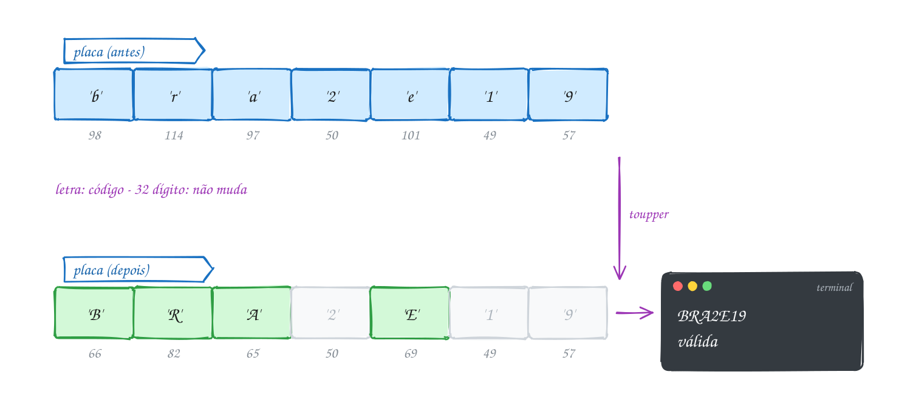
#include <stdio.h>
#include <ctype.h>
#include <stdbool.h>
#define TAM 7
int main(void) {
// placa Mercosul: letra letra letra número letra número número
char placa[TAM] = {'b', 'r', 'a', '2', 'e', '1', '9'};
bool valida = true;
for (int i = 0; i < TAM; i++) {
char antes = placa[i];
placa[i] = (char) toupper(placa[i]);
printf("%c (%3d) -> %c (%3d)\n", antes, antes, placa[i], placa[i]);
// posições 3, 5 e 6 são dígitos; as outras, letras
bool deve_ser_digito = (i == 3 || i == 5 || i == 6);
if (deve_ser_digito && !isdigit(placa[i])) {
valida = false;
}
if (!deve_ser_digito && !isalpha(placa[i])) {
valida = false;
}
}
printf("Placa: ");
for (int i = 0; i < TAM; i++) {
putchar(placa[i]);
}
printf(" -> %s\n", valida ? "válida" : "inválida");
return 0;
}
// Saída:
// b ( 98) -> B ( 66)
// r (114) -> R ( 82)
// a ( 97) -> A ( 65)
// 2 ( 50) -> 2 ( 50)
// e (101) -> E ( 69)
// 1 ( 49) -> 1 ( 49)
// 9 ( 57) -> 9 ( 57)
// Placa: BRA2E19 -> válida
O vetor placa ainda não é string: falta o marcador de fim (próximo assunto).
Uma posição errada invalida a placa, mas o laço segue até o fim:
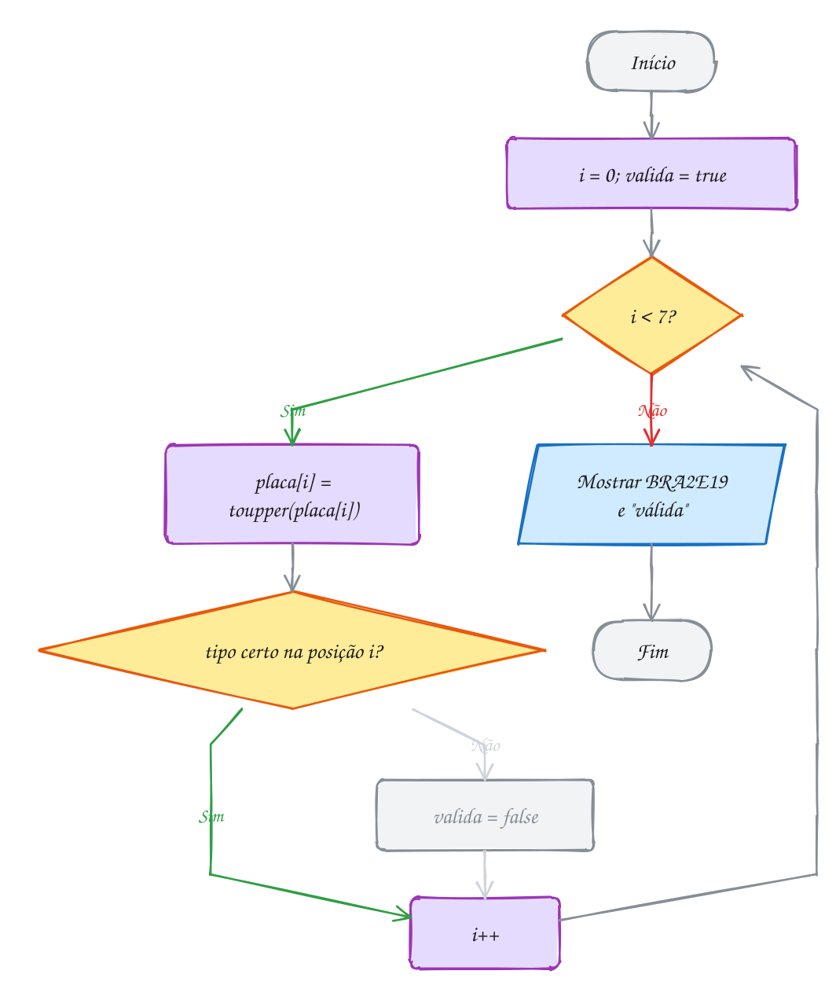
Exemplo A079 · O dígito '7' não vale 7
#include <stdio.h>
#include <ctype.h>
#define TAM 8
int main(void) {
// código de um boleto, guardado como caracteres (do jeito que foi digitado)
char codigo[TAM] = {'3', '4', '1', '9', '1', '0', '7', '8'};
int soma_codigos = 0; // soma os códigos ASCII: '3' é 51, não 3
int soma_valores = 0; // soma o que cada dígito vale
for (int i = 0; i < TAM; i++) {
if (!isdigit(codigo[i])) {
printf("Posição %d não é dígito\n", i);
return 1;
}
soma_codigos += codigo[i];
soma_valores += codigo[i] - '0'; // '7' - '0' = 55 - 48 = 7
}
printf("Somando os códigos: %d\n", soma_codigos);
printf("Somando os valores: %d\n", soma_valores);
// o caminho de volta: um número de 0 a 9 vira o caractere do dígito
int resto = soma_valores % 10;
char dv = (char) ('0' + resto);
printf("Último dígito da soma: %c (código %d)\n", dv, dv);
return 0;
}
// Saída:
// Somando os códigos: 417
// Somando os valores: 33
// Último dígito da soma: 3 (código 51)
gcc ~/LPEDC/material/A079.c -o ~/LPEDC/material/A079 && ~/LPEDC/material/A079
Exemplo A080 · Contando o que foi digitado, letra por letra
#include <stdio.h>
#include <ctype.h>
int main(void) {
int letras = 0, digitos = 0, espacos = 0, outros = 0;
int c; // int, e não char: getchar pode devolver EOF, que não é um caractere
printf("Digite o endereço: ");
while ((c = getchar()) != '\n' && c != EOF) {
if (isalpha(c)) {
letras++;
} else if (isdigit(c)) {
digitos++;
} else if (isspace(c)) {
espacos++;
} else {
outros++;
}
}
printf("Letras: %d\n", letras);
printf("Dígitos: %d\n", digitos);
printf("Espaços: %d\n", espacos);
printf("Outros: %d\n", outros);
return 0;
}
// Digite o endereço: Rua 7 de Setembro, 1500
// Letras: 13
// Dígitos: 5
// Espaços: 4
// Outros: 1
gcc ~/LPEDC/material/A080.c -o ~/LPEDC/material/A080 && ~/LPEDC/material/A080
Exercício E235 · ★☆☆
Mostre o código ASCII de cada caractere do vetor abaixo, um por linha, no formato do exemplo. Depois, mostre os caracteres dos códigos 72, 105 e 33, colados, numa linha só (descubra a mensagem!).
char simbolos[] = {'A', 'Z', 'a', 'z', '0', '9', ' ', '@'};
Saída esperada:
'A' = 65
'Z' = 90
'a' = 97
'z' = 122
'0' = 48
'9' = 57
' ' = 32
'@' = 64
Hi!
Exercício E237 · ★★☆
A cifra de César troca cada letra pela que fica K posições depois no alfabeto, dando a volta no fim (com K = 3: A vira D, X vira A, Z vira C). O que não é letra fica como está.
Cifre a mensagem abaixo com K = 3, mostre, depois decifre (ande 3 para trás) e mostre de novo:
char msg[] = {'Z', 'E', 'B', 'R', 'A', ' ', 'A', 'Z', 'U', 'L'};
Saída esperada:
Cifrada: CHEUD DCXO
Decifrada: ZEBRA AZUL
Exercício E238 · ★★☆
Um formulário pede o CEP. A pessoa pode digitar com ou sem o traço: "69050-010" e "69050010" valem. Leia a linha caractere por caractere com getchar, até o Enter (ou EOF), e:
- guarde os dígitos num vetor char cep[8];
- ignore o '-';
- qualquer outro caractere torna o CEP inválido;
- o CEP só é válido com exatamente 8 dígitos.
Entrada:
69050-010
Saída esperada:
CEP válido: 69050010
Entrada:
6905-00100
Saída esperada:
CEP inválido.
Exercício E240 · ★★★
Reescreva cinco funções do ctype.h usando só a tabela ASCII (nada de ctype.h dentro delas):
bool meu_isdigit(int c);
bool meu_isupper(int c);
bool meu_islower(int c);
bool meu_isalpha(int c); use as duas anteriores
int meu_toupper(int c); devolve c igual se não for minúscula
Depois, prove que estão certas: para TODOS os códigos de 0 a 127, compare cada uma com a original do ctype.h e conte as diferenças. Atenção: a original devolve "diferente de zero" para verdadeiro, não 1. Compare a verdade, não o número.
Saída esperada:
meu_toupper('q') = Q
meu_toupper('7') = 7
Diferenças em 128 códigos: 0
Na entrada de um evento, a recepção imprime o crachá juntando nome e
sobrenome: "Bruna", um espaço e "Matos". Depois confere se o nome bate com o
do cadastro. Em C, o + não junta textos e o == não compara textos. Para
entender por quê, você precisa saber o que um texto é na memória.
Em C não existe um tipo próprio para texto. Uma string é um vetor de
char que termina com o caractere nulo '\0', o de código 0 (DEITEL;
DEITEL, 2011, cap. 8). Pense numa fita de etiquetas com um ponto final
impresso: quem lê vai letra por letra até o ponto e para ali, mesmo que a
fita continue. O '\0' é esse ponto final. O printf com %s e todas as
funções de texto andam pelo vetor até achá-lo, e o que vem depois dele é
ignorado.
char nome[] = "Bruna"; // 6 posições: 'B' 'r' 'u' 'n' 'a' '\0'
char cracha[20]; // cabem até 19 caracteres + o '\0'
char letra = 'B'; // aspas simples: UM char (o número 66)
char texto[] = "B"; // aspas duplas: uma string, 2 bytes ('B' e '\0')
Quando você escreve um texto entre aspas duplas, o compilador já põe o '\0'
no fim. Por isso "Bruna" ocupa 6 bytes, e não 5. A regra geral: um texto de
N caracteres precisa de N + 1 posições (BACKES, 2013, cap. 7). Esquecer
esse +1 é o erro mais comum com string; num vetor char cracha[20], cabem 19
letras.
As aspas também mudam o tipo. 'B', entre aspas simples, é um char:
o número 66. "B", entre aspas duplas, é uma string de 2 bytes: o 'B'
e o '\0' (BACKES, 2013, cap. 7). Trocar uma pela outra dá erro ou aviso de
compilação.
Como string é vetor (assunto 0037), ela herda as limitações dele: não se
atribui com = depois da declaração e não se compara com ==, que compararia
endereços e não letras. As operações com texto são funções da biblioteca
<string.h>. Nas que copiam, o destino vem primeiro, na mesma ordem
de dest = orig (KERNIGHAN; RITCHIE, 1989, cap. 5). A tabela reúne as quatro
que você mais vai usar:
| função | faz |
|---|---|
strlen(s) |
conta os caracteres até o '\0' (sem ele) |
strcpy(dest, orig) |
copia orig para dentro de dest |
strcat(dest, orig) |
cola orig no fim de dest |
strcmp(a, b) |
0 se iguais; negativo se a vem antes; positivo se depois |
O strlen merece atenção. A string não guarda o próprio tamanho, então ele
anda pelo vetor contando até o '\0', a cada chamada. O resultado é um
size_t, o inteiro sem sinal que o C usa para tamanhos, e se mostra com
%zu. Como cada chamada percorre o texto, escrever for (i = 0; i < strlen(s); i++) refaz a contagem a cada volta; calcule o tamanho antes do
laço (CPPREFERENCE, s.d.). Ele conta bytes, não letras: strlen("Belém") é 6,
porque o "é" ocupa 2 bytes no UTF-8.
Uma lista de nomes é uma matriz de char (assunto 0039), com uma string por
linha. Em char nomes[3][10] = {"Ana", "Bia", "Caio"};, nomes[1] é "Bia" e
cada nome tem até 9 caracteres mais o '\0' (CELES; CERQUEIRA; RANGEL, 2016).
[!WARNING]
strcpyestrcatnão sabem o tamanho do destino: escrevem até acabar a origem. "Bruna Matos" numchar cracha[8]é estouro de buffer, falha de segurança clássica. Estrcmpdevolve 0 quando são iguais; como 0 é falso,if (strcmp(a, b))quer dizer "se forem diferentes". Escreva== 0.
A recepção monta o crachá juntando nome e sobrenome. No vetor de 20, as 11
primeiras posições guardam "Bruna Matos", a 12ª o '\0', e o resto não
importa:
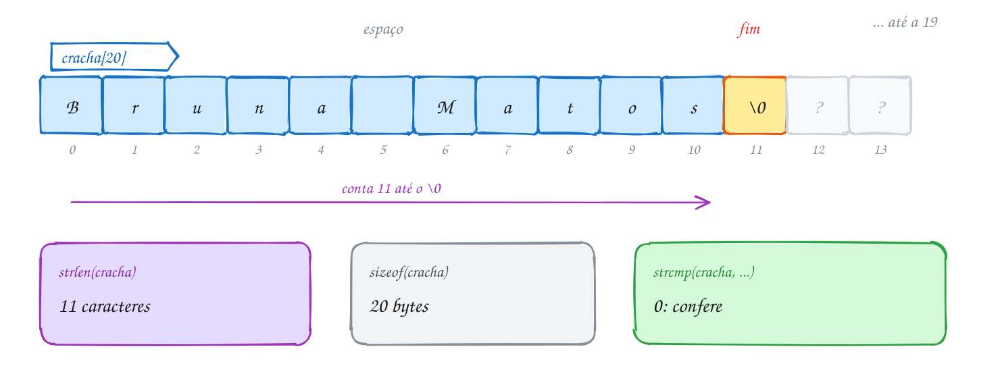
#include <stdio.h>
#include <string.h>
int main(void) {
char nome[] = "Bruna"; // 6 bytes: 5 letras + '\0'
char sobrenome[] = "Matos";
char cracha[20]; // espaço de sobra: até 19 letras + '\0'
strcpy(cracha, nome); // cracha = "Bruna"
strcat(cracha, " "); // cracha = "Bruna "
strcat(cracha, sobrenome); // cracha = "Bruna Matos"
printf("Crachá: %s\n", cracha);
printf("strlen: %zu caracteres\n", strlen(cracha)); // conta até o '\0'
printf("sizeof: %zu bytes\n", sizeof(cracha)); // o vetor inteiro
if (strcmp(cracha, "Bruna Matos") == 0) { // 0 quer dizer iguais
printf("Confere com a inscrição.\n");
}
return 0;
}
// Saída:
// Crachá: Bruna Matos
// strlen: 11 caracteres
// sizeof: 20 bytes
// Confere com a inscrição.
O strcat acha o '\0' do destino, escreve por cima e põe um novo no fim.
Toda função de string é um laço "até achar o '\0'":
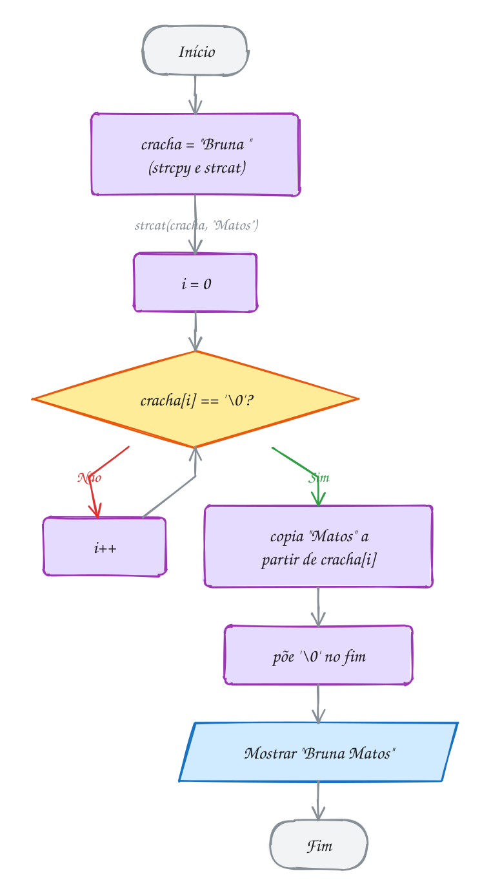
Exemplo A081 · A etiqueta que não pode estourar
#include <stdio.h>
#include <string.h>
#define TAM 20 // a etiqueta impressa tem 19 caracteres + o '\0'
int main(void) {
char etiqueta[TAM] = "SP"; // as outras 18 posições viram '\0'
char partes[3][12] = {"/Campinas", "/Centro", "/Bloco B"};
for (int i = 0; i < 3; i++) {
// antes do strcat, a conta: o que tem + o que vem + 1 do '\0'
size_t precisa = strlen(etiqueta) + strlen(partes[i]) + 1;
if (precisa <= sizeof(etiqueta)) {
strcat(etiqueta, partes[i]);
printf("+ %-9s -> %s\n", partes[i], etiqueta);
} else {
printf("%s não cabe: precisaria de %zu bytes\n", partes[i], precisa);
}
}
// strcmp compara códigos: maiúscula e minúscula são diferentes
if (strcmp(etiqueta, "SP/Campinas/Centro") == 0) {
printf("Igual a \"SP/Campinas/Centro\"\n");
}
if (strcmp(etiqueta, "sp/campinas/centro") != 0) {
printf("Diferente de \"sp/campinas/centro\": 'S' é 83, 's' é 115\n");
}
return 0;
}
// Saída:
// + /Campinas -> SP/Campinas
// + /Centro -> SP/Campinas/Centro
// /Bloco B não cabe: precisaria de 27 bytes
// Igual a "SP/Campinas/Centro"
// Diferente de "sp/campinas/centro": 'S' é 83, 's' é 115
gcc ~/LPEDC/material/A081.c -o ~/LPEDC/material/A081 && ~/LPEDC/material/A081
Exemplo A082 · Percorrendo até o '\0'
#include <stdio.h>
// conta os caracteres sem strlen: anda até achar o '\0'
int tamanho(const char s[]) {
int i = 0;
while (s[i] != '\0') {
i++;
}
return i;
}
// copia caractere por caractere e fecha com o '\0'
void copiar(char destino[], const char origem[]) {
int i;
for (i = 0; origem[i] != '\0'; i++) {
destino[i] = origem[i];
}
destino[i] = '\0'; // sem esta linha, destino não termina
}
int main(void) {
char cidade[] = "Belém";
char copia[20];
copiar(copia, cidade);
copia[0] = 'X'; // a cópia é outro vetor
printf("%s tem %d bytes antes do '\\0'\n", cidade, tamanho(cidade));
printf("cópia alterada: %s\n", copia);
cidade[3] = '\0'; // corta a string no meio
printf("cortada: %s (%d)\n", cidade, tamanho(cidade));
return 0;
}
// Saída:
// Belém tem 6 bytes antes do '\0'
// cópia alterada: Xelém
// cortada: Bel (3)
gcc ~/LPEDC/material/A082.c -o ~/LPEDC/material/A082 && ~/LPEDC/material/A082
Exercício E241 · ★☆☆
Declare char cidade[] = "Manaus"; e mostre cada posição do vetor, INCLUINDO a do '\0', com o caractere e o código. Para o '\0', mostre \0 no lugar do caractere. No fim, mostre strlen e sizeof.
Saída esperada:
[0] M 77
[1] a 97
[2] n 110
[3] a 97
[4] u 117
[5] s 115
[6] \0 0
strlen = 6, sizeof = 7
Exercício E243 · ★★☆
Implemente, sem usar o string.h, as suas versões de três funções:
int meu_strlen(const char s[]);
void meu_strcat(char dest[], const char orig[]);
int meu_strcmp(const char a[], const char b[]);
meu_strcmp devolve 0 se forem iguais, um negativo se a vem antes e um positivo se a vem depois. No main, teste:
char usuario[30] = "joao";
meu_strcat(usuario, ".silva");
Saída esperada:
joao.silva (10)
igual a "joao.silva"? sim
"ana" antes de "bia"? sim
"bia" antes de "bianca"? sim
Exercício E244 · ★★☆
Um palíndromo se lê igual nos dois sentidos: "arara", "osso". Escreva
bool eh_palindromo(const char s[]);
que ignora a diferença entre maiúsculas e minúsculas ("Reviver" vale) e teste com as palavras do vetor de strings abaixo (cada linha da matriz de char é uma string):
char palavras[5][12] = {"arara", "Reviver", "carro", "Osso", "A"};
Saída esperada:
arara: sim
Reviver: sim
carro: não
Osso: sim
A: sim
Exercício E246 · ★★★
Uma biblioteca quer padronizar os títulos dos livros: a primeira letra de cada palavra em maiúscula e as outras em minúscula. Escreva
int capitalizar(char s[]);
que altera a string no lugar e devolve quantas palavras ela tem. Palavras são separadas por um ou mais espaços (pode haver espaço no começo e no fim).
char titulo[] = " o SENHOR dos aneis ";
Saída esperada:
[ O Senhor Dos Aneis ]
4 palavras
No cadastro de um app de consultas, a pessoa digita "Maria Clara" e o
programa responde "Olá, Maria!". O "Clara" sumiu. O culpado é o scanf, que
com %s lê uma palavra e para no primeiro espaço. O "Clara" fica
esperando na entrada e atrapalha a próxima leitura. Ler texto do teclado pede
ferramentas próprias, e cada uma tem uma regra que você precisa conhecer.
Comece pelo scanf("%s", nome). Ele não leva &, porque o nome do vetor já
é o endereço do começo dele (assunto 0038). Ele pula os espaços iniciais, lê
letras até o primeiro espaço, tab ou Enter, e põe o '\0' no fim (BACKES,
2013, cap. 7). Serve para uma palavra solta, como uma sigla ou um login.
O scanf também não sabe quantos bytes o vetor tem. Se a pessoa digitar 60
letras num char nome[40], ele escreve as 60 e passa do fim do vetor. A
proteção é a largura, um número entre o % e o s: scanf("%39s", nome) lê no máximo 39 letras e deixa a 40ª posição para o '\0' (BACKES,
2013, cap. 7).
Para ler uma linha inteira, com espaços, a ferramenta é o fgets:
fgets(nome, sizeof(nome), stdin);
Os três argumentos são onde guardar, quantos bytes cabem ali e de onde ler; o
stdin é a entrada padrão, normalmente o teclado. O fgets lê até o Enter
ou até encher o vetor, o que vier primeiro, guardando no máximo
tamanho - 1 caracteres, e sempre põe o '\0' no fim. Com
sizeof(nome) no segundo argumento, ele nunca passa do fim do vetor. Se a
entrada acabar (Ctrl+D no Linux), ele devolve NULL (LINUX MAN-PAGES
PROJECT, s.d.).
O fgets tem uma diferença que pega todo mundo: ele guarda o '\n' do
Enter, se couber. "Maria Clara" chega como "Maria Clara\n", e um printf
depois dela pula uma linha a mais. Para tirar esse '\n', use o
strcspn do <string.h>: strcspn(s, "\n") devolve a posição do
primeiro '\n' da string ou, se não houver nenhum, o tamanho dela. Trocar
essa posição por '\0' termina o texto antes do Enter (LINUX MAN-PAGES
PROJECT, s.d.):
nome[strcspn(nome, "\n")] = '\0';
A linha funciona nos dois casos. Com '\n', ele vira '\0'; sem '\n'
(a linha encheu o vetor), a posição devolvida já é a do '\0', que é trocado
por ele mesmo.
Para entender o warning abaixo, falta saber como a entrada chega. O terminal
junta o que você digita num buffer, uma área de espera, e só entrega
quando você aperta Enter. scanf, getchar e fgets tiram bytes desse
mesmo buffer, em fila: o que uma leitura deixa, a próxima pega (DEITEL;
DEITEL, 2011, cap. 8). Por isso o "Clara" do começo não se perde; ele fica no
buffer até alguém lê-lo.
Em material antigo você ainda vai encontrar o gets. Ele lia uma linha sem
receber o tamanho do vetor e escrevia além do fim quando a linha era longa.
Essa falha foi a brecha usada pelo worm de Morris, em 1988, que parou boa
parte da internet da época (SPAFFORD, 1989). O gets foi removido no C11;
use o fgets.
[!WARNING]
scanf("%d")seguido defgets"pula" a leitura: oscanfdeixa o Enter no buffer, e ofgetso lê como uma linha vazia. Descarte o resto comwhile ((c = getchar()) != '\n' && c != EOF) {}, comint c. Não usefflush(stdin): é comportamento indefinido.
No cadastro, a pessoa digita "Maria Clara" num char nome[40]. O fgets copia
os 11 caracteres, o '\n' e o '\0'; o strcspn acha o '\n' na posição 11,
e ele vira o novo fim:
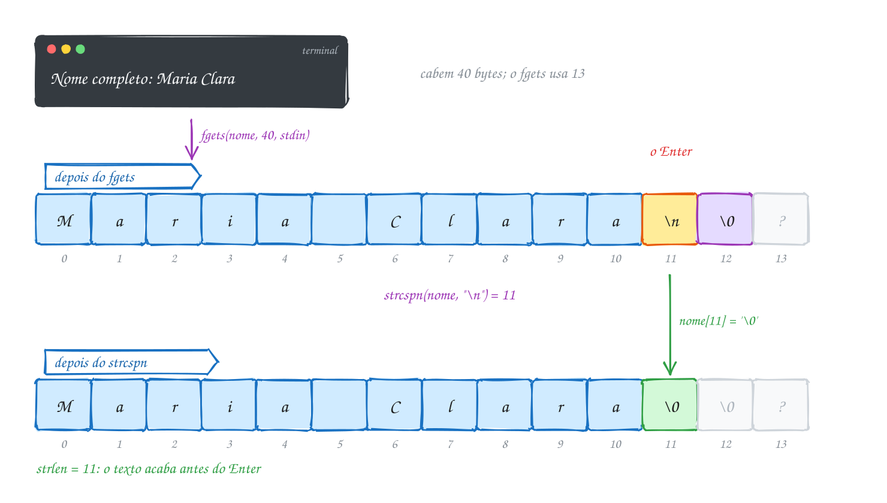
#include <stdio.h>
#include <string.h>
int main(void) {
char nome[40];
printf("Nome completo: ");
if (fgets(nome, sizeof(nome), stdin) == NULL) { // NULL: a entrada acabou
printf("Nada foi digitado.\n");
return 1;
}
printf("Lido: [%s]", nome); // o '\n' veio junto
nome[strcspn(nome, "\n")] = '\0'; // troca o '\n' pelo fim
printf("Limpo: [%s]\n", nome);
printf("Olá, %s! Seu nome tem %zu caracteres.\n", nome, strlen(nome));
return 0;
}
// Nome completo: Maria Clara
// Lido: [Maria Clara
// ]Limpo: [Maria Clara]
// Olá, Maria Clara! Seu nome tem 11 caracteres.
O teste do NULL vem primeiro: se a entrada acabou, não há nome para limpar.
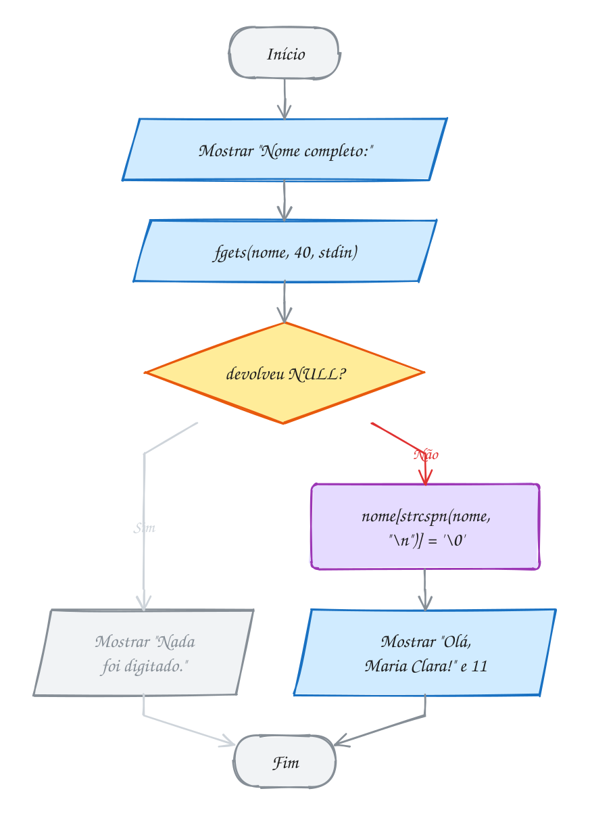
Exemplo A083 · O recado que termina numa linha vazia
#include <stdio.h>
#include <string.h>
#define TAM 60
int main(void) {
char linha[TAM];
int linhas = 0;
size_t letras = 0;
printf("Digite o recado (linha vazia termina):\n");
// para no fim da entrada (NULL) ou numa linha vazia, o que vier primeiro
while (fgets(linha, sizeof(linha), stdin) != NULL) {
linha[strcspn(linha, "\n")] = '\0';
if (strlen(linha) == 0) { // só o Enter: depois de tirar o '\n', sobra ""
break;
}
linhas++;
letras += strlen(linha);
printf("%d| %s\n", linhas, linha);
}
printf("%d linhas, %zu caracteres\n", linhas, letras);
return 0;
}
// Digite o recado (linha vazia termina):
// Chego umas 19h
// 1| Chego umas 19h
// Deixa a chave com a vizinha
// 2| Deixa a chave com a vizinha
//
// 2 linhas, 41 caracteres
gcc ~/LPEDC/material/A083.c -o ~/LPEDC/material/A083 && ~/LPEDC/material/A083
Exemplo A084 · Número, depois texto, e a linha que não coube
#include <stdio.h>
#include <string.h>
// joga fora o que sobrou na linha, até o '\n' (ou o fim da entrada)
void descartar_linha(void) {
int c;
while ((c = getchar()) != '\n' && c != EOF) {
}
}
int main(void) {
int idade;
char cidade[12]; // cabem 10 letras + '\n' + '\0'
printf("Idade: ");
if (scanf("%d", &idade) != 1) {
printf("Idade inválida.\n");
return 1;
}
descartar_linha(); // sem isto, o fgets leria o '\n' que o scanf deixou
printf("Cidade: ");
if (fgets(cidade, sizeof(cidade), stdin) == NULL) {
return 1;
}
size_t pos = strcspn(cidade, "\n");
if (cidade[pos] == '\n') {
cidade[pos] = '\0'; // coube: só tira o '\n'
} else {
descartar_linha(); // não coube: o resto ainda está na entrada
printf("(nome longo demais, cortado)\n");
}
printf("%d anos, de %s\n", idade, cidade);
return 0;
}
// Idade: 34
// Cidade: Campina Grande
// (nome longo demais, cortado)
// 34 anos, de Campina Gra
gcc ~/LPEDC/material/A084.c -o ~/LPEDC/material/A084 && ~/LPEDC/material/A084
Exercício E248 · ★☆☆
O programa abaixo faz três leituras seguidas da mesma linha: dois scanf e um fgets. Troque o printf final por um printf depois de CADA leitura, que mostre o que ela pegou entre colchetes e o strlen. No fgets, mostre o strlen antes e depois de tirar o '\n'. Rode digitando a linha
Maria Clara Souza
Saída esperada (depois da linha digitada):
1ª leitura: [Maria] (5)
2ª leitura: [Clar] (4)
fgets: 8 com o '\n', limpo: [a Souza] (7)
Para testar sem digitar: printf 'Maria Clara Souza\n' | ~/LPEDC/rodar seguido do caminho deste arquivo.
Exercício E249 · ★★☆
Leia a quantidade de ingressos (um inteiro, com scanf) e, na linha seguinte, o nome completo do comprador (pode ter espaços, use fgets e tire o '\n'). Depois mostre a quantidade e o nome. Cuidado: o '\n' que sobra depois do scanf não pode atrapalhar a leitura do nome.
Entrada:
2
Ana Lima
Saída esperada:
2 ingresso(s) para Ana Lima
Exercício E250 · ★★☆
O cadastro do banco exige uma senha com pelo menos 8 caracteres, uma letra maiúscula, uma minúscula e um dígito (espaço é permitido). Leia a senha com fgets, tire o '\n' e mostre, para cada regra que falhar, uma linha "Falta:". Se nenhuma falhar, mostre "Senha forte.".
Entrada:
banana12
Saída esperada:
Falta: letra maiúscula
Entrada:
abc
Saída esperada:
Falta: 8 caracteres (tem 3)
Falta: letra maiúscula
Falta: dígito
Entrada:
Pao de Queijo 1
Saída esperada:
Senha forte.
Exercício E252 · ★★★
O programa abaixo lê com fgets num vetor de só 6 bytes, num laço, até a entrada acabar. Uma linha longa chega em pedaços, e cada pedaço parece uma linha nova. Sem aumentar o vetor s, mude o programa para que ele:
1. mostre cada pedaço numerado, entre colchetes, com o '\n' (quando vier)
escrito como \n, sem quebrar a linha da tela;
2. perceba quando um pedaço fecha uma linha (termina em '\n') e mostre o
número da linha e quantas letras ela teve, somando os pedaços;
3. no fim, mostre quantas leituras e quantas linhas de verdade houve.
Rode com printf 'abacaxi\nuva\n' | ~/LPEDC/rodar seguido do caminho deste arquivo.
Saída esperada:
pedaço 1: [abaca]
pedaço 2: [xi\n] fim da linha 1 (7 letras)
pedaço 3: [uva\n] fim da linha 2 (3 letras)
3 leituras, 2 linhas
A escola do bairro abriu uma enquete para o mascote da festa junina: arara,
boto ou capivara. Os votos chegam um por linha, do jeito que cada pessoa
digitou: boto, Arara, CAPIVARA, Tatu. Você precisa contar os votos,
desenhar um gráfico de barras e anunciar o vencedor. Nenhuma peça é nova; o
trabalho está em encaixar as peças do módulo.
A entrada vem primeiro. O fgets (assunto 0042) lê um voto por linha e
devolve NULL quando a entrada acaba. Isso vira um laço com sentinela
(assunto 0025): o laço continua enquanto o fgets não devolve NULL, e você
não precisa saber de antemão quantos votos vão chegar (LINUX MAN-PAGES
PROJECT, s.d.).
Cada linha lida precisa de uma limpeza antes da comparação, um passo chamado
de normalizar. O strcspn tira o '\n' que o fgets guardou, e o
tolower (assunto 0040) passa cada letra para minúscula, para que "BOTO",
"Boto" e "boto" virem o mesmo texto. O (unsigned char) antes do tolower
protege contra votos com acento (DEITEL; DEITEL, 2011, cap. 8).
Os candidatos ficam numa matriz de char (assunto 0039), um nome por
linha: char nomes[3][12]. Ela ocupa 36 bytes contínuos; "arara" usa 6 bytes
da linha 0, e o resto da linha fica com zeros. nomes[i] começa em início +
i × 12, e é essa conta que obriga o [TAM_NOME] no parâmetro da função que
recebe a matriz (BACKES, 2013, cap. 9). Nomes de tamanhos muito diferentes
desperdiçam espaço; no módulo 07, a memória dinâmica guarda cada nome com o
tamanho exato.
A contagem usa um vetor de contadores (assunto 0037), int votos[3]. A
ideia é casar as posições: votos[i] conta os votos do candidato que está em
nomes[i]. Se a capivara é a linha 2 da matriz, os votos dela ficam em
votos[2] (DEITEL; DEITEL, 2011, cap. 6).
Falta ligar o voto à posição. A função buscar compara a linha com cada
nome usando strcmp e devolve a posição em que achou ou -1, como no A076. O
-1 resolve o voto inválido sem if especial: "Tatu" não está na matriz, a
busca devolve -1, e o main soma esse voto aos inválidos (BACKES, 2013,
cap. 9).
As funções seguem o assunto 0038. normalizar recebe a linha e a altera,
porque recebeu o endereço do vetor; buscar só lê, então os parâmetros dela
podem levar const. O main cuida do laço e do resultado, e cada função faz
uma coisa só.
Por fim, uma operação que aparece no exercício de ordenar uma lista: trocar
dois nomes de lugar. Como string não se atribui com =, a troca é um
strcpy triplo com uma variável auxiliar: copia o primeiro para a auxiliar,
o segundo para o primeiro e a auxiliar para o segundo. O A086 ordena uma
lista assim (KERNIGHAN; RITCHIE, 1989, cap. 5).
[!WARNING] Empate: com
votos[i] > votos[vencedor], ganha quem aparece primeiro na matriz; com>=, o último. É uma regra escondida no operador: decida de propósito. E"boto ", com espaço no fim, é inválido para ostrcmp:normalizarnão corta espaços.
A enquete do mascote da festa junina: arara, boto ou capivara. Cada linha lida passa pela mesma esteira: normaliza, procura na matriz e soma 1. "Tatu" vai para os inválidos:
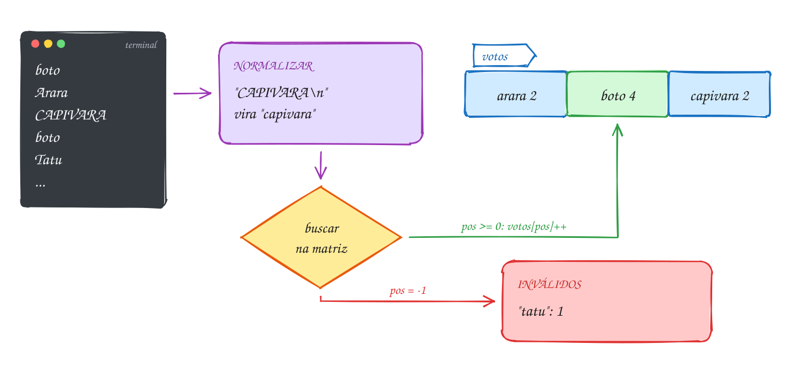
Para testar sem digitar, mande os votos com
printf 'boto\nArara\n...' | ./programa:
#include <stdio.h>
#include <string.h>
#include <ctype.h>
#define CANDIDATOS 3
#define TAM_NOME 12
#define TAM_LINHA 40
// tira o '\n' e deixa tudo em minúsculas: "BOTO\n" vira "boto"
void normalizar(char s[]) {
s[strcspn(s, "\n")] = '\0';
for (int i = 0; s[i] != '\0'; i++) {
s[i] = (char) tolower((unsigned char) s[i]);
}
}
// devolve a posição do candidato, ou -1 se o voto não bate com nenhum
int buscar(char nomes[][TAM_NOME], int n, const char voto[]) {
for (int i = 0; i < n; i++) {
if (strcmp(nomes[i], voto) == 0) {
return i;
}
}
return -1;
}
void mostrar_barra(const char nome[], int votos) {
printf("%-9s ", nome);
for (int i = 0; i < votos; i++) {
putchar('#');
}
printf(" %d\n", votos);
}
int main(void) {
char nomes[CANDIDATOS][TAM_NOME] = {"arara", "boto", "capivara"};
int votos[CANDIDATOS] = {0};
int invalidos = 0;
char linha[TAM_LINHA];
while (fgets(linha, sizeof(linha), stdin) != NULL) { // um voto por linha
normalizar(linha);
int pos = buscar(nomes, CANDIDATOS, linha);
if (pos >= 0) {
votos[pos]++;
} else {
invalidos++;
}
}
int vencedor = 0;
for (int i = 0; i < CANDIDATOS; i++) {
mostrar_barra(nomes[i], votos[i]);
if (votos[i] > votos[vencedor]) {
vencedor = i;
}
}
printf("Inválidos: %d\n", invalidos);
printf("Vencedor: %s\n", nomes[vencedor]);
return 0;
}
// Entrada (um voto por linha):
// boto, Arara, CAPIVARA, boto, Tatu, capivara, Boto, arara, boto
// Saída:
// arara ## 2
// boto #### 4
// capivara ## 2
// Inválidos: 1
// Vencedor: boto
Dentro do laço há uma decisão: achou o candidato ou não. O resultado só sai quando a entrada acaba:
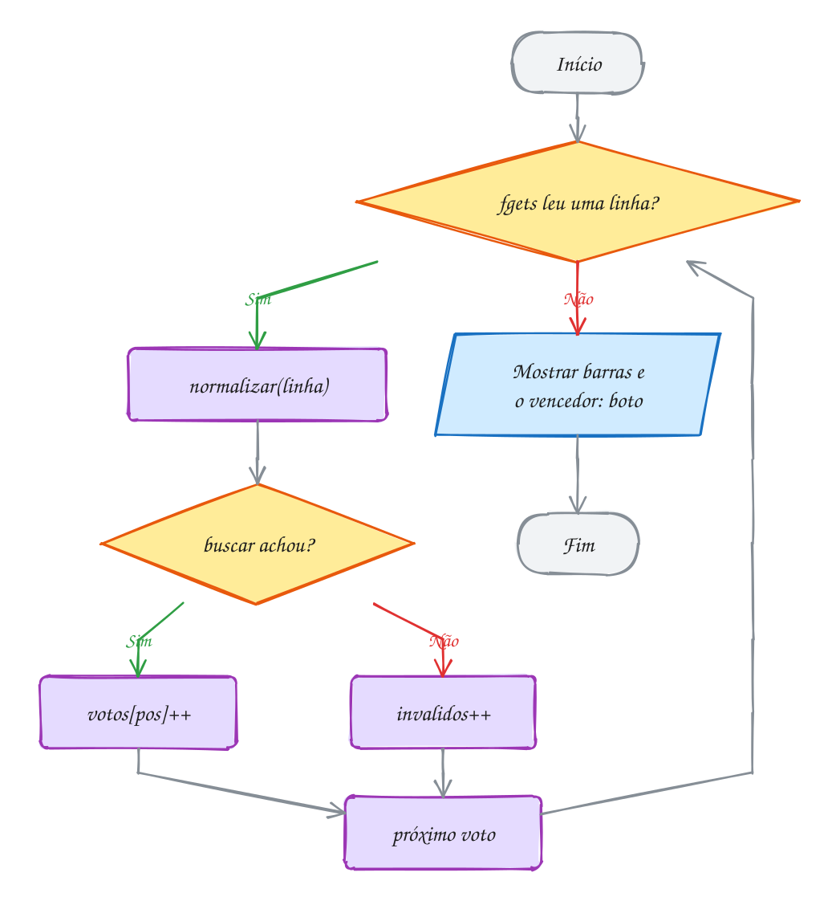
Exemplo A085 · Os logins da empresa nova
#include <stdio.h>
#include <string.h>
#include <ctype.h>
#define MAX 10
#define TAM_LOGIN 16
#define TAM_LINHA 60
// iniciais dos nomes do meio + o último nome, tudo em minúsculas:
// "Ana Paula Souza" vira "apsouza"
void gerar_login(const char nome[], char login[]) {
int n = (int) strlen(nome);
int ultimo = 0; // onde começa a última palavra
for (int i = 0; i < n; i++) {
if (nome[i] == ' ') {
ultimo = i + 1;
}
}
int j = 0;
for (int i = 0; i < n && j < TAM_LOGIN - 2; i++) { // sobra lugar p/ dígito e '\0'
int comeca_palavra = nome[i] != ' ' && (i == 0 || nome[i - 1] == ' ');
if (i >= ultimo || comeca_palavra) {
login[j] = (char) tolower((unsigned char) nome[i]);
j++;
}
}
login[j] = '\0';
}
int buscar(char logins[][TAM_LOGIN], int n, const char login[]) {
for (int i = 0; i < n; i++) {
if (strcmp(logins[i], login) == 0) {
return i;
}
}
return -1;
}
int main(void) {
char logins[MAX][TAM_LOGIN];
int total = 0;
char linha[TAM_LINHA];
while (total < MAX && fgets(linha, sizeof(linha), stdin) != NULL) {
linha[strcspn(linha, "\n")] = '\0';
if (strlen(linha) == 0) {
continue; // linha em branco não vira login
}
char base[TAM_LOGIN];
gerar_login(linha, base);
strcpy(logins[total], base);
// já existe? tenta base2, base3... até achar um livre
for (int k = 2; buscar(logins, total, logins[total]) >= 0; k++) {
strcpy(logins[total], base);
size_t fim = strlen(logins[total]);
logins[total][fim] = (char) ('0' + k);
logins[total][fim + 1] = '\0';
}
printf("%-22s -> %s\n", linha, logins[total]);
total++;
}
printf("%d logins criados\n", total);
return 0;
}
// Entrada (um nome por linha, com uma linha em branco depois do 3º):
// Ana Paula Souza, Joao Lima, Antonio Pedro Souza, Bia Alves, Amanda P Souza
// Saída:
// Ana Paula Souza -> apsouza
// Joao Lima -> jlima
// Antonio Pedro Souza -> apsouza2
// Bia Alves -> balves
// Amanda P Souza -> apsouza3
// 5 logins criados
gcc ~/LPEDC/material/A085.c -o ~/LPEDC/material/A085 && ~/LPEDC/material/A085
Exemplo A086 · A lista de chamada em ordem alfabética
#include <stdio.h>
#include <string.h>
#define ALUNOS 6
#define TAM 20
// troca duas linhas da matriz: string não se atribui com =, então strcpy
void trocar(char a[], char b[]) {
char aux[TAM];
strcpy(aux, a);
strcpy(a, b);
strcpy(b, aux);
}
// ordenação por seleção: põe o menor que sobrou na posição i
void ordenar(char nomes[][TAM], int n) {
for (int i = 0; i < n - 1; i++) {
int menor = i;
for (int j = i + 1; j < n; j++) {
if (strcmp(nomes[j], nomes[menor]) < 0) {
menor = j;
}
}
if (menor != i) {
trocar(nomes[i], nomes[menor]);
}
}
}
int main(void) {
char nomes[ALUNOS][TAM] = {"Rafael", "Ana", "Carlos", "Beatriz", "Ana Clara", "Bruno"};
ordenar(nomes, ALUNOS);
for (int i = 0; i < ALUNOS; i++) {
printf("%d. %s\n", i + 1, nomes[i]);
}
return 0;
}
// Saída:
// 1. Ana
// 2. Ana Clara
// 3. Beatriz
// 4. Bruno
// 5. Carlos
// 6. Rafael
gcc ~/LPEDC/material/A086.c -o ~/LPEDC/material/A086 && ~/LPEDC/material/A086
Exercício E254 · ★☆☆
Complete as funções para mostrar a tabela de artilheiros do campeonato do bairro, com o nome alinhado à esquerda em 10 colunas e o total no fim. O main já está pronto.
Saída esperada:
Nome Gols
Tiago 7
Duda 12
Kauã 5
Lia 9
Total: 33
Artilheiro: Duda
Exercício E255 · ★★☆
Uma rodada de forca, com tudo fixo no código: a palavra secreta é "BANANA" e os chutes, na ordem, estão no vetor abaixo. Depois de cada chute, mostre a palavra com '_' nas letras ainda escondidas (separadas por espaço) e, se a letra não existir na palavra, conte um erro. Pare assim que a palavra estiver completa (os chutes que sobrarem não são usados).
char secreta[] = "BANANA";
char chutes[] = {'A', 'E', 'N', 'B', 'O'};
Saída esperada:
Chute A: _ A _ A _ A
Chute E: _ A _ A _ A (erro 1)
Chute N: _ A N A N A
Chute B: B A N A N A
Venceu com 1 erro(s)!
Exercício E256 · ★★☆
Valide um CPF digitado com fgets, com ou sem pontuação ("529.982.247-25" ou "52998224725"). Os dois últimos dígitos são verificadores, calculados a partir dos 9 primeiros:
1º verificador: multiplique os 9 primeiros dígitos por 10, 9, 8, ..., 2
e some. Seja r o resto da soma por 11. Se r < 2, o dígito é 0; senão,
é 11 - r.
2º verificador: o mesmo com os 10 primeiros dígitos (os 9 + o 1º
verificador), multiplicados por 11, 10, ..., 2.
O CPF é válido se tiver exatamente 11 dígitos (ignore '.' e '-'; qualquer outro caractere invalida), se os verificadores baterem e se os 11 dígitos NÃO forem todos iguais (111.111.111-11 passa na conta, mas não vale).
Entrada:
529.982.247-25
Saída esperada:
CPF válido.
Entrada:
529.982.247-26
Saída esperada:
CPF inválido.
Exercício E258 · ★★★
Compressão RLE (run-length encoding): cada sequência de letras repetidas vira a letra seguida de quantas vezes ela aparece. "aaabccdddd" vira "a3b1c2d4". Para simplificar, a contagem é sempre um dígito só: uma sequência de mais de 9 vira pedaços de 9 ("zzzzzzzzzzzz", 12 z, vira "z9z3").
Leia uma linha com fgets, tire o '\n', comprima numa string saida[] e mostre o resultado e os tamanhos. Se a versão comprimida não for menor, avise que não compensa.
Entrada:
aaabccdddd
Saída esperada:
a3b1c2d4 (10 -> 8)
Entrada:
abc
Saída esperada:
a1b1c1 (3 -> 6): não compensa
Entrada:
zzzzzzzzzzzz
Saída esperada:
z9z3 (12 -> 4)
30 exercícios que misturam os assuntos do módulo, no ritmo da prova. Arquivos P0501.c a P0530.c, em material/; resoluções em _respostas/05-vetores-e-strings/lista/.
Exercício P0501 · ★☆☆ · O melhor dia da padaria
A padaria do bairro anotou o faturamento de cada dia da semana, em reais:
Dom 1830 Seg 920 Ter 1045 Qua 870 Qui 1110 Sex 1490 Sáb 2210
Guarde os valores num vetor int vendas[7] e os nomes dos dias numa matriz de char dias[7][5]. Mostre o total da semana, a média (com 2 casas) e o dia de maior e o de menor faturamento, pelo nome.
Saída esperada:
Total da semana: R$ 9475
Média por dia: R$ 1353.57
Maior: Sáb (R$ 2210)
Menor: Qua (R$ 870)
Resposta esperada: total 9475, média 1353.57, maior no sábado e menor na quarta.
Exercício P0502 · ★☆☆ · Procurando o código no estoque
O mercadinho guarda os códigos dos produtos num vetor, na ordem em que foram cadastrados:
int codigos[8] = {4410, 1270, 9031, 5588, 1270, 3302, 7745, 6120};
Escreva int buscar(const int v[], int n, int procurado), que devolve a POSIÇÃO da primeira ocorrência de procurado no vetor, ou -1 se ele não estiver lá. No main, procure 5588, 1270 e 2000 e mostre o resultado assim:
Saída esperada:
Código 5588: posição 3
Código 1270: posição 1
Código 2000: não cadastrado
Resposta esperada: a saída acima (1270 aparece duas vezes, mas a busca para na posição 1).
Exercício P0503 · ★☆☆ · A fila ao contrário
Na fila do posto de saúde, as senhas foram chamadas nesta ordem:
int senhas[] = {101, 102, 105, 108, 110, 113, 117};
O auditor quer ver a fila de trás para a frente. Escreva void inverter(int v[], int n), que inverte o vetor NO LUGAR (sem criar outro vetor), e void mostrar(const int v[], int n). Mostre a fila antes e depois de inverter.
Saída esperada:
Antes: 101 102 105 108 110 113 117
Depois: 117 113 110 108 105 102 101
Exercício P0504 · ★☆☆ · O estoque das duas lojas
Uma rede de açaí tem duas lojas. Cada matriz 2x3 guarda os litros em estoque (linhas: polpa pura e com guaraná; colunas: tamanhos P, M e G):
int centro[2][3] = {{12, 20, 8}, {5, 9, 14}};
int bairro[2][3] = {{7, 3, 10}, {11, 6, 2}};
Monte a matriz total[2][3] com a soma das duas (posição por posição) e mostre as três matrizes, cada número com %4d:
Saída esperada:
Centro:
12 20 8
5 9 14
Bairro:
7 3 10
11 6 2
Total:
19 23 18
16 15 16
Exercício P0505 · ★☆☆ · A grade de horários deitada
A escola guarda quantas aulas cada professor dá em cada dia, numa matriz 3x4 (linhas: Ana, Beto, Cris; colunas: seg, ter, qua, qui):
int aulas[3][4] = {{2, 4, 0, 3}, {1, 1, 5, 2}, {3, 0, 2, 4}};
A secretaria quer a tabela "deitada": uma linha por dia e uma coluna por professor. Monte a TRANSPOSTA t[4][3] (t[j][i] = aulas[i][j]) e mostre as duas, cada número com %3d:
Saída esperada:
Por professor (3x4):
2 4 0 3
1 1 5 2
3 0 2 4
Por dia (4x3):
2 1 3
4 1 0
0 5 2
3 2 4
Exercício P0506 · ★☆☆ · É identidade?
A matriz identidade tem 1 na diagonal principal e 0 em todo o resto. Escreva:
void montar_identidade(int m[4][4]);
bool eh_identidade(int m[4][4]);
No main, monte a identidade 4x4 e mostre-a. Depois teste eh_identidade com ela e com a matriz abaixo (que tem um 1 fora do lugar), e mostre o resultado de cada teste:
int quase[4][4] = {{1, 0, 0, 0}, {0, 1, 0, 1}, {0, 0, 1, 0}, {0, 0, 0, 1}};
Saída esperada:
1 0 0 0
0 1 0 0
0 0 1 0
0 0 0 1
id é identidade? sim
quase é identidade? não
Exercício P0507 · ★☆☆ · Raio-x do endereço
O cadastro da loja recebeu o endereço abaixo e quer saber do que ele é feito. Conte, com as funções do ctype.h, as letras maiúsculas, as minúsculas, os dígitos, os espaços e o resto (pontuação):
char endereco[] = "Rua 7 de Setembro, 1500 - Centro";
Saída esperada:
Maiúsculas: 3
Minúsculas: 16
Dígitos: 5
Espaços: 6
Outros: 2
Total: 32 (strlen = 32)
Resposta esperada: a saída acima (32 caracteres no total).
Exercício P0508 · ★☆☆ · O nome do crachá
O crachá do congresso mostra o sobrenome em maiúsculas, uma vírgula e o primeiro nome. Com
char nome[] = "Raimunda";
char sobrenome[] = "Nonato";
monte numa terceira string char cracha[40] o texto "NONATO, Raimunda", usando strcpy e strcat. Depois mostre o crachá, o tamanho dele (strlen) e as iniciais "R.N.".
Saída esperada:
Crachá: NONATO, Raimunda
Tamanho: 16
Iniciais: R.N.
Exercício P0509 · ★☆☆ · Conserte o contador de letras
A função conta abaixo deveria dizer quantas vezes uma letra aparece no nome do rio. Ela tem DOIS erros de propósito, e o gcc avisa dos dois: rode, leia os avisos (warning) e conserte. Depois de consertado, o programa mostra:
Saída esperada:
Letra o: 3
Letra a: 2
Letra z: 1
Exercício P0510 · ★☆☆ · Quantos de cada número
Uma sapataria vendeu 14 pares de tênis num sábado, com estes números:
int vendidos[14] = {38, 40, 37, 42, 40, 39, 40, 35, 38, 41, 40, 44, 38, 37};
A loja trabalha do 34 ao 44. Conte quantos pares de cada número saíram, usando um vetor de contadores de 11 posições (uma por número), e mostre só os números que venderam, com um # por par:
Saída esperada:
35: # (1)
37: ## (2)
38: ### (3)
39: # (1)
40: #### (4)
41: # (1)
42: # (1)
44: # (1)
Exercício P0511 · ★★☆ · Quanto custa cada receita em cada mercado
Uma doceira faz duas receitas. A matriz q (2x3) diz quantos quilos de cada ingrediente cada receita usa (colunas: farinha, açúcar, chocolate), e a matriz p (3x2) diz o preço do quilo de cada ingrediente em dois mercados:
double q[2][3] = {{2.0, 1.0, 0.5}, // bolo
{1.0, 0.5, 1.0}}; // brigadeirão
double p[3][2] = {{5.50, 4.90}, // farinha: mercado A, B
{4.20, 4.80}, // açúcar
{38.00, 41.50}}; // chocolate
O custo de cada receita em cada mercado é o produto c = q x p (2x2): c[i][j] = soma de q[i][k] * p[k][j], para k de 0 a 2. Escreva a função
void multiplicar(double a[2][3], double b[3][2], double c[2][2]);
e mostre o resultado, dizendo o mercado mais barato para cada receita:
Saída esperada:
Bolo: A = R$ 34.20, B = R$ 35.35 -> mais barato no A
Brigadeirão: A = R$ 45.60, B = R$ 48.80 -> mais barato no A
Resposta esperada: bolo R$ 34.20 x R$ 35.35 (A) e brigadeirão R$ 45.60 x R$ 48.80 (A).
Exercício P0512 · ★★☆ · A tabela de distâncias é simétrica?
Uma transportadora de Manaus guarda as distâncias (em km) entre 4 bases numa matriz 4x4. Se a ida e a volta têm a mesma distância, a matriz é SIMÉTRICA: m[i][j] == m[j][i] para todo i e j. Uma delas foi digitada com erro:
int d1[4][4] = {{0, 12, 30, 8}, {12, 0, 25, 17},
{30, 25, 0, 21}, {8, 17, 21, 0}};
int d2[4][4] = {{0, 12, 30, 8}, {12, 0, 25, 17},
{30, 52, 0, 21}, {8, 17, 21, 0}};
Escreva bool simetrica(int m[4][4], int erro[2]), que devolve se a matriz é simétrica e, quando não for, guarda em erro[0] e erro[1] a linha e a coluna do primeiro par diferente (com coluna maior que a linha). Mostre também a soma dos números acima da diagonal principal (que, numa tabela simétrica, é a soma de todas as distâncias, cada uma uma vez só):
Saída esperada:
d1: simétrica, soma acima da diagonal = 113 km
d2: NÃO simétrica em [1][2] (25 x 52)
Resposta esperada: d1 simétrica com soma 113; d2 não simétrica, primeiro erro em [1][2] (25 x 52).
Exercício P0513 · ★★☆ · Busca binária nos CEPs
A transportadora guarda 10 CEPs de entrega em ordem crescente:
int ceps[10] = {69005010, 69020030, 69040000, 69050010, 69053000,
69057040, 69060000, 69075351, 69083000, 69097290};
Num vetor ORDENADO dá para buscar sem olhar um por um: compare com o do meio; se o procurado for menor, descarte a metade de cima; se for maior, a de baixo. Escreva int busca_binaria(const int v[], int n, int x, int passos[1]), que devolve a posição de x (ou -1) e guarda em passos[0] quantas comparações com o meio fez. Procure 69075351, 69005010 e 69099999:
Saída esperada:
CEP 69075351: posição 7 em 2 passos
CEP 69005010: posição 0 em 3 passos
CEP 69099999: não atendido (4 passos)
Exercício P0514 · ★★☆ · Encaixar na fila preferencial
A fila do cartório é ordenada pela idade, do mais velho para o mais novo. Ela cabe até 10 pessoas e hoje tem 6:
int idades[10] = {91, 84, 77, 70, 66, 61};
int n = 6;
Escreva int inserir(int v[], int n, int cap, int idade), que encaixa a idade no lugar certo (empurrando os mais novos uma casa para a direita) e devolve o novo tamanho. Se a fila estiver cheia, não mexe e devolve n. Insira 80, 95 e 60, mostrando a fila depois de cada inserção:
Saída esperada:
Entrou 80: 91 84 80 77 70 66 61
Entrou 95: 95 91 84 80 77 70 66 61
Entrou 60: 95 91 84 80 77 70 66 61 60
Exercício P0515 · ★★☆ · Tirar da vitrine o que acabou
A loja on-line tem 9 produtos, cada um com um código e o estoque, em dois vetores paralelos (a posição i dos dois fala do mesmo produto):
int codigo[9] = {11, 12, 13, 14, 15, 16, 17, 18, 19};
int estoque[9] = { 4, 0, 7, 0, 0, 2, 9, 0, 1};
Escreva int compactar(int cod[], int est[], int n), que remove dos DOIS vetores os produtos com estoque 0, sem usar vetor auxiliar e mantendo a ordem, e devolve quantos sobraram. Mostre os vetores antes e depois:
Saída esperada:
Antes (9): 11:4 12:0 13:7 14:0 15:0 16:2 17:9 18:0 19:1
Depois (5): 11:4 13:7 16:2 17:9 19:1
Resposta esperada: a saída acima (sobram 5 produtos).
Exercício P0516 · ★★☆ · A mediana do tempo de entrega
O app de entregas mediu, em minutos, as 9 últimas corridas de um motoboy:
int tempos[9] = {34, 18, 52, 27, 41, 23, 19, 60, 30};
A média engana quando há corrida muito demorada; a MEDIANA é o valor do meio depois de ordenar. Ordene o vetor com a ordenação por seleção (a cada passo, ache o menor do que sobrou e troque com a posição i), mostrando o vetor depois de cada passo. No fim, mostre a média e a mediana:
Saída esperada:
Passo 1: 18 34 52 27 41 23 19 60 30
Passo 2: 18 19 52 27 41 23 34 60 30
Passo 3: 18 19 23 27 41 52 34 60 30
Passo 4: 18 19 23 27 41 52 34 60 30
Passo 5: 18 19 23 27 30 52 34 60 41
Passo 6: 18 19 23 27 30 34 52 60 41
Passo 7: 18 19 23 27 30 34 41 60 52
Passo 8: 18 19 23 27 30 34 41 52 60
Média: 33.78 min
Mediana: 30 min
Resposta esperada: a saída acima (média 33.78, mediana 30).
Exercício P0517 · ★★☆ · Arrumando os espaços do endereço
O formulário do correio recebeu um endereço cheio de espaços sobrando:
char end[] = " Av. Eduardo Ribeiro , 620 ";
Escreva void normalizar(char s[]), que arruma a string NO LUGAR: tira os espaços do começo e do fim, deixa um espaço só entre as palavras e tira o espaço que vem antes de vírgula. Mostre a string entre colchetes, antes e depois, e o strlen de cada uma:
Saída esperada:
Antes: [ Av. Eduardo Ribeiro , 620 ] (37)
Depois: [Av. Eduardo Ribeiro, 620] (24)
Resposta esperada: [Av. Eduardo Ribeiro, 620], com 24 caracteres.
Exercício P0518 · ★★☆ · O telefone digitado de qualquer jeito
O cadastro da farmácia lê o celular com fgets, e cada pessoa digita de um jeito: "92 99123-4567", "(92)991234567", "92.99123.4567". Escreva um programa que lê UMA linha com fgets num char linha[40], guarda só os dígitos numa outra string e:
Exemplo de execução 1:
(92)991234567
Celular: (92) 99123-4567
(a primeira linha é a que você digita; só a segunda é do programa)
Exemplo de execução 2:
9912-3456
Inválido: 8 dígitos
Resposta esperada: as duas execuções acima.
Exercício P0519 · ★★☆ · Totais da planilha de vendas
A sorveteria anota as vendas (em potes) de 3 sabores em 4 semanas:
int v[3][4] = {{40, 35, 52, 48}, {22, 30, 27, 31}, {15, 18, 12, 25}};
Complete o programa: falta calcular o total de cada sabor (linha), o total de cada semana (coluna) e o total geral, para a tabela sair assim:
Saída esperada:
S1 S2 S3 S4 Total
Coco 40 35 52 48 175
Manga 22 30 27 31 110
Tapioca 15 18 12 25 70
Total 77 83 91 104 355
Resposta esperada: a saída acima (total geral 355).
Exercício P0520 · ★★☆ · O meu atoi
O extrato do banco chegou como texto, e cada lançamento é uma string:
char lanc[5][8] = {"1200", "-350", "+80", "-1045", "75"};
Escreva int texto_para_int(const char s[]), que converte a string em int SEM usar atoi nem sscanf: aceita um sinal opcional (+ ou -) no começo e para no primeiro caractere que não é dígito. Mostre cada valor convertido e o saldo final (a soma de todos):
Saída esperada:
"1200" -> 1200
"-350" -> -350
"+80" -> 80
"-1045" -> -1045
"75" -> 75
Saldo: -40
Resposta esperada: a saída acima (saldo -40).
Exercício P0521 · ★★★ · Quem ganhou o jogo da velha
Escreva o juiz do jogo da velha. O tabuleiro tem 3 linhas de 3 casas, com 'X', 'O' ou '.' (casa vazia), e cada linha é uma string: char t[3][4] (3 letras + '\0'). Escreva:
char vencedor(char t[3][4]); // 'X', 'O' ou '.' se ninguém fechou linha
bool cheio(char t[3][4]); // true se não sobrou casa vazia
e void julgar(char t[3][4]), que mostra o tabuleiro e uma das três frases: "Vitória do X", "Deu velha" ou "Em andamento". Julgue os quatro tabuleiros abaixo (escritos linha por linha):
"XOX" "OXO" "OOX" (X na diagonal principal)
"OXX" "XOO" "XOX" (cheio, ninguém fechou)
"XX." "OO." "..." (ainda tem jogo)
"XXO" "XOX" "OXX" (O na diagonal secundária)
Saída esperada:
Jogo 1:
X O X
O X O
O O X
Vitória do X
Jogo 2:
O X X
X O O
X O X
Deu velha
Jogo 3:
X X .
O O .
. . .
Em andamento
Jogo 4:
X X O
X O X
O X X
Vitória do O
Exercício P0522 · ★★★ · A matriz esparsa do estacionamento
Um estacionamento de 5 andares e 6 setores anota quantos carros estão parados em cada setor. Quase tudo é zero:
int m[5][6] = {{0, 0, 3, 0, 0, 0},
{0, 0, 0, 0, 0, 7},
{1, 0, 0, 0, 0, 0},
{0, 0, 4, 0, 0, 0},
{0, 2, 0, 0, 0, 0}};
Guardar 30 números para 5 que importam é desperdício. Uma MATRIZ ESPARSA guarda só as triplas (linha, coluna, valor) dos que não são zero. Escreva:
linha por linha, e devolve quantas são;
transposta (6x5) JÁ em ordem de linha, sem montar a matriz cheia;
a matriz completa a partir das triplas (zero onde não há tripla).
Saída esperada:
5 de 30 casas guardadas
Triplas: (0,2,3) (1,5,7) (2,0,1) (3,2,4) (4,1,2)
Transposta: (0,2,1) (1,4,2) (2,0,3) (2,3,4) (5,1,7)
Transposta cheia (6x5):
0 0 1 0 0
0 0 0 0 2
3 0 0 4 0
0 0 0 0 0
0 0 0 0 0
0 7 0 0 0
Exercício P0523 · ★★★ · Lendo a planilha em CSV
Uma planilha de municípios do Amazonas foi exportada em CSV, com os campos separados por ponto e vírgula (cidade;UF;população). Uma das linhas veio com a UF vazia:
char linhas[4][48] = {"Manaus;AM;2063547", "Parintins;;96372",
"Itacoatiara;AM;103598", "Manacapuru;AM;101883"};
Escreva int separar(const char linha[], char campos[3][32]), que copia cada campo para uma linha de campos (sem usar strtok) e devolve quantos campos achou. Converta a população com a sua própria conta de dígitos (nada de atoi). Mostre uma tabela alinhada, com "??" no lugar da UF vazia, e no fim o total e a cidade mais populosa:
Saída esperada:
Manaus AM 2063547
Parintins ?? 96372
Itacoatiara AM 103598
Manacapuru AM 101883
Total: 2365400 habitantes
Mais populosa: Manaus
Resposta esperada: a saída acima (total 2365400, Manaus a maior).
Exercício P0524 · ★★★ · A nuvem de palavras do trava-língua
Conte quantas vezes cada palavra aparece no trava-língua abaixo, sem diferenciar maiúscula de minúscula. Mostre as palavras na ordem em que apareceram pela primeira vez e, no fim, a mais repetida (no empate, a que apareceu antes):
char frase[] = "O rato roeu a roupa do Rei de Roma, e o rei riu do rato.";
Guarde as palavras distintas numa matriz char palavras[20][16] e as contagens num vetor int cont[20].
Saída esperada:
o 2
rato 2
roeu 1
a 1
roupa 1
do 2
rei 2
de 1
roma 1
e 1
riu 1
Distintas: 11
Mais repetida: o (2 vezes)
Resposta esperada: a saída acima (11 palavras distintas).
Exercício P0525 · ★★★ · A ronda em espiral
O vigia de um galpão com 4 corredores de 5 prateleiras faz a ronda em espiral: vai pela borda de cima da esquerda para a direita, desce pela direita, volta por baixo, sobe pela esquerda e repete por dentro, até passar por todas. Cada prateleira tem um número:
int g[4][5] = {{ 1, 2, 3, 4, 5},
{ 6, 7, 8, 9, 10},
{11, 12, 13, 14, 15},
{16, 17, 18, 19, 20}};
Mostre a ordem da ronda e, depois, uma matriz com o número do passo em que cada prateleira foi visitada (%3d):
Saída esperada:
Ronda: 1 2 3 4 5 10 15 20 19 18 17 16 11 6 7 8 9 14 13 12
1 2 3 4 5
14 15 16 17 6
13 20 19 18 7
12 11 10 9 8
Exercício P0526 · ★★★ · O cartão passa no teste de Luhn?
Antes de mandar o pagamento para o banco, a loja confere se o número do cartão foi digitado direito com o algoritmo de Luhn:
dobro passar de 9, subtraia 9 (8 * 2 = 16 vira 7).
Escreva bool luhn(const char s[], int soma[1]), que ignora espaços (e recusa qualquer outro caractere que não seja dígito) e confira os quatro números abaixo, mostrando também a soma:
"4539 1488 0343 6467"
"4539 1488 0343 6468"
"79927398713"
"1234-5678"
Saída esperada:
4539 1488 0343 6467 soma 80 -> válido
4539 1488 0343 6468 soma 81 -> inválido
79927398713 soma 70 -> válido
1234-5678 soma -1 -> inválido
Exercício P0527 · ★★★ · A lista de chamada em ordem
A professora digitou a lista de chamada fora de ordem:
char nomes[7][20] = {"Thiago", "Ana Clara", "Bruno", "Yasmin",
"Ana Beatriz", "Davi", "Larissa"};
Escreva void ordenar(char v[][20], int n), que põe os nomes em ordem alfabética com o método da bolha (compare vizinhos com strcmp e troque com strcpy e uma string auxiliar). Depois escreva int buscar(char v[][20], int n, const char nome[]), uma busca binária que devolve a posição do nome ou -1. Mostre a lista numerada e procure "Davi" e "Carla":
Saída esperada:
1. Ana Beatriz
2. Ana Clara
3. Bruno
4. Davi
5. Larissa
6. Thiago
7. Yasmin
Davi: número 4 da chamada
Carla: não está na lista
Resposta esperada: a saída acima ("Ana Beatriz" vem antes de "Ana Clara" porque 'B' < 'C').
Exercício P0528 · ★★★ · O sudoku 4x4 está certo?
Um sudoku 4x4 está certo quando cada linha, cada coluna e cada um dos quatro quadrados 2x2 tem os números 1, 2, 3 e 4, sem repetir. Escreva bool valido(int s[4][4]), que mostra a PRIMEIRA regra quebrada (no formato da saída) e devolve false, ou devolve true se tudo estiver certo. Teste:
int a[4][4] = {{1, 2, 3, 4}, {3, 4, 1, 2}, {2, 1, 4, 3}, {4, 3, 2, 1}};
int b[4][4] = {{1, 2, 3, 4}, {3, 4, 1, 2}, {2, 1, 4, 3}, {4, 2, 3, 1}};
int c[4][4] = {{1, 2, 3, 4}, {2, 1, 4, 3}, {3, 4, 1, 2}, {4, 3, 2, 1}};
Saída esperada:
a:
certo
b:
erro na coluna 1
errado
c:
erro no quadrado 0
errado
Resposta esperada: a saída acima (b quebra a coluna 1; c só quebra um quadrado, apesar das linhas e colunas certas).
Exercício P0529 · ★★★ · Conserte o gerador de etiquetas
O programa abaixo gera a etiqueta de envio "PARA:
Conserte os três. Ele deve mostrar:
Saída esperada:
PARA: Benedita Farias - Boa Vista/RR
Tamanho: 36
Envio expresso: entrega em 2 dias
Resposta esperada: a saída acima (etiqueta com 36 caracteres).
Exercício P0530 · ★★★ · O fatorial que não cabe no long long
O fatorial de 30 tem 33 dígitos, e um unsigned long long vai só até uns 1,8 x 10^19 (20 dígitos). Calcule 30! guardando o número num vetor de dígitos, int d[60], com o dígito das unidades em d[0], o das dezenas em d[1], e assim por diante, e um int tam com quantos dígitos estão em uso.
Escreva void multiplicar(int d[], int tam[1], int k), que multiplica o número por um int pequeno k (até 100) e atualiza tam[0] (um vetor de uma posição volta alterado para o main, como o erro[] do P0512), do jeito que se faz à mão: dígito a dígito, levando o "vai um". Mostre 10!, 20!, 25! e 30!, com o número de dígitos de cada um:
Saída esperada:
10! = 3628800 (7 dígitos)
20! = 2432902008176640000 (19 dígitos)
25! = 15511210043330985984000000 (26 dígitos)
30! = 265252859812191058636308480000000 (33 dígitos)
Resposta esperada: a saída acima (30! = 265252859812191058636308480000000).
Problemas extras que misturam os assuntos do módulo. Resolva num arquivo seu e compile com as flags de estudo.
1. Segundo maior. Dado int v[] = {14, 9, 27, 3, 27, 18};, ache o segundo
maior valor diferente do maior, numa passada só, sem ordenar.
O maior é 27 e o segundo maior é 18 (o outro 27 não conta). Guarde
maior e segundo. Para cada item: se for maior que maior, o antigo
maior desce para segundo; senão, se for menor que maior e maior que
segundo, ele vira o segundo. Comece os dois com o menor int possível
(INT_MIN, de <limits.h>).
2. Remover duplicados de um vetor ordenado. int v[] = {2, 2, 3, 5, 5, 5, 8, 9, 9}; Deixe cada valor uma vez só, no próprio vetor, e devolva o novo
tamanho.
Fica 2 3 5 8 9 e o tamanho 5. Use dois índices: escrita começa em 1;
leitura anda de 1 até o fim e, sempre que v[leitura] != v[escrita - 1],
copia para v[escrita] e avança escrita. Uma passada só, sem vetor extra.
As posições depois do novo tamanho continuam com valores velhos: quem chama
passa a usar só o tamanho devolvido.
3. Juntar duas listas ordenadas. a = {1, 4, 9, 12} e b = {2, 3, 10}.
Monte c com os 7 valores em ordem, sem ordenar c depois.
1 2 3 4 9 10 12. Um índice em cada vetor: compare a[i] com b[j], copie
o menor para c[k] e avance quem foi copiado. Quando um acabar, copie o
resto do outro. É o coração do merge sort (assunto 0094).
4. Girar a matriz. Gire {{1, 2, 3}, {4, 5, 6}} (2×3) 90° no sentido
horário, gerando uma 3×2.
Resultado: 4 1 / 5 2 / 6 3. A regra é g[c][L - 1 - l] = m[l][c], com
L = número de linhas da original (2). Confira com a célula do 6: na
original está em [1][2], na girada vai para [2][0].
5. Quadrado mágico? Escreva bool eh_magico(int m[][4]) para uma matriz
4×4: todas as linhas, colunas e as duas diagonais com a mesma soma. Teste com
{{16, 3, 2, 13}, {5, 10, 11, 8}, {9, 6, 7, 12}, {4, 15, 14, 1}}.
É mágico: tudo soma 34. Calcule a soma da primeira linha como referência
e compare as outras 9 somas (3 linhas, 4 colunas, 2 diagonais) com ela. Na
primeira diferente, devolva false.
6. Anagramas. "Roma" e "amor" são anagramas (mesmas letras, outra ordem).
Escreva bool anagramas(const char a[], const char b[]) sem ordenar nada,
ignorando maiúsculas.
Um vetor int conta[26] = {0}: cada letra de a soma 1 em
conta[tolower(c) - 'a'], cada letra de b subtrai 1. São anagramas se,
no fim, as 26 posições forem zero. "Roma" e "amor": sim. Antes de usar
o caractere como índice, confira com isalpha: um espaço ou um byte de "ã"
daria um índice fora do vetor.
7. Achar uma palavra dentro da outra. Sem usar strstr, escreva
int posicao(const char texto[], const char busca[]) que devolve a posição em que
busca começa em texto, ou -1.
posicao("banana split", "na") é 2; posicao("banana", "uva") é -1.
Para cada i do texto, compare texto[i + k] com busca[k] enquanto forem
iguais e busca[k] != '\0'. Se chegou ao '\0' da busca, achou em i. Não
precisa de cuidado extra com o fim do texto: o '\0' do texto é diferente
de qualquer letra da busca, e a comparação para ali.
8. Somar números gigantes. long long vai até uns 9 × 10¹⁸. Some
"98765432109876543210" com "12345678901234567890" guardando os números
como strings, dígito a dígito, como na escola.
111111111011111111100. Ande do último dígito para o primeiro nas duas
strings, some (a[i] - '0') + (b[j] - '0') + vai_um, guarde
soma % 10 e leve soma / 10. O resultado sai de trás para frente: inverta
no fim (ou escreva de trás para frente num vetor com uma posição extra para o
último "vai um").
9. Cifra de Vigenère. É a César com um deslocamento diferente para cada
letra, dado por uma chave que se repete (A = 0, B = 1, ..., L = 11...).
Escreva void vigenere(char texto[], const char chave[], int sentido) que
cifra o texto no próprio vetor com sentido 1 e decifra com -1. No main,
cifre char msg[] = "ATACARAGORA" com a chave "LIMAO", mostre, decifre e
mostre de novo.
Cifrado: LBMCOCISOFL
Decifrado: ATACARAGORA
A letra i do texto anda chave[i % strlen(chave)] - 'A' posições: A + L =
L, T + I = B, A + M = M, C + A = C, A + O = O, R + L = C, e assim por diante,
sempre com % 26. Para decifrar, ande 26 - desloc, o que mantém a conta
sem número negativo.
10. Jogo da vida, duas gerações. Numa matriz 5×5 de 0 e 1, cada célula
viva com 2 ou 3 vizinhas vivas continua viva; uma morta com exatamente 3
vizinhas nasce; o resto morre ou fica morto. Escreva
void proxima(int m[5][5], int nova[5][5]) e uma função que mostre a matriz
com # para viva e . para morta. Comece com um "pisca-pisca", uma linha de
três vivas no meio (m[2][1], m[2][2], m[2][3]), e mostre as gerações 0,
1 e 2.
Geração 0:
.....
.....
.###.
.....
.....
Geração 1:
.....
..#..
..#..
..#..
.....
Geração 2:
.....
.....
.###.
.....
.....
A linha vira coluna e volta a ser linha. O cuidado: calcule tudo numa
segunda matriz. Se você atualizar a original enquanto conta, as células
já mudadas atrapalham a contagem das vizinhas. A contagem de vizinhas é a do
campo minado (E234). Para a geração 2, chame proxima(b, a): as duas
matrizes revezam.
Questões no formato da Prova de Conhecimentos do PPGI, com uma alternativa
certa. Nas de vetor, desenhe as gavetas com os índices; nas de string, inclua
a gaveta do '\0'.
1. Numa máquina de 64 bits (ponteiro de 8 bytes, int de 4), o que
tam(v) mostra quando v é um int v[10]?
void tam(int v[]) {
printf("%zu\n", sizeof(v) / sizeof(v[0]));
}
(C). Um vetor passado para função chega como o endereço do primeiro
item. Dentro de tam, v é um int *: sizeof(v) é 8, e 8 / 4 = 2. A
conta sizeof(v) / sizeof(v[0]) só funciona no bloco em que o vetor foi
declarado; por isso o tamanho vai como parâmetro. O gcc avisa
(-Wsizeof-array-argument). Veja 0038.
2. Sobre vetores e strings em C, considere as afirmações e marque a alternativa CORRETA.
I. Uma função que recebe um vetor escreve nas gavetas do vetor original.
II. Dentro dessa função, sizeof(v) / sizeof(v[0]) dá a quantidade de elementos do vetor original.
III. char s[] = "ufam"; ocupa 5 bytes.
IV. strlen("ufam") vale 5.
(A) Apenas I e III
(B) Apenas I e II
(C) Apenas II e IV
(D) Apenas III e IV
(E) Apenas I, II e III
(A). I é verdadeira: o que se copia é o endereço do vetor. II é falsa: dentro da função, v é um ponteiro, e o sizeof mede o ponteiro. III é verdadeira: 4 letras mais o '\0'. IV é falsa: o strlen não conta o '\0' e dá 4. Veja 0038 e 0041.
3. Qual a saída?
char s[20] = "Manaus";
printf("%zu %zu\n", strlen(s), sizeof(s));
(D). strlen conta os caracteres antes do '\0': 6. sizeof mede
o vetor inteiro, 20 bytes, usados ou não. O 7 seria sizeof de
char s[] = "Manaus", em que o compilador conta o '\0'. Veja 0041.
4. Em int m[3][4];, quantos int ficam na memória antes de
m[2][1]?
(B). O C guarda a matriz linha após linha (row-major). Antes da linha
2 vêm 2 linhas de 4, e dentro dela vem 1 item: 2 * 4 + 1 = 9. O 5 seria a
conta por colunas (1 * 3 + 2), que não é a do C. Veja 0039.
5. Considere as afirmações sobre vetores e matrizes e marque a alternativa CORRETA.
I. Depois de int w[5] = {3, 1};, os três últimos itens valem 0.
II. Se int v[5], o acesso a v[5] é checado em tempo de execução e interrompe o programa com erro.
III. Em int m[3][4], sizeof(m) vale 12 * sizeof(int).
IV. Uma string de n caracteres precisa de pelo menos n + 1 bytes de vetor.
(A) Apenas I e II
(B) Apenas II e III
(C) Apenas I e IV
(D) Apenas III e IV
(E) Apenas I, III e IV
(E). I é verdadeira: com inicializador, o que falta vira zero. II é falsa: o C não confere índice, e v[5] é comportamento indefinido. III é verdadeira: a matriz tem 12 itens, no escopo onde foi declarada. IV é verdadeira: falta a gaveta do '\0' se o vetor for justo. Veja 0037, 0039 e 0041.
6. Qual a saída?
char t[10] = "ufam\0pg";
int i = 0;
while (t[i])
i++;
printf("%d\n", i);
(C). O laço para no primeiro byte zero, e o \0 escrito no meio do
texto é um zero de verdade, na posição 4. Para qualquer função de string, o
t é só "ufam"; o pg continua na memória, mas ninguém enxerga. Veja 0041.
7. Qual a saída?
char x[] = "PPGI", y[] = "PPGI";
printf("%d %d\n", x == y, strcmp(x, y) == 0);
==(B). x == y compara os endereços dos dois vetores, que são
diferentes: 0. Quem compara o conteúdo, letra por letra, é o strcmp, que
devolve 0 quando são iguais. Compila, com o aviso
comparison between two arrays. Veja 0041.
8. Sobre o trecho abaixo, é correto afirmar:
int v[5] = {1, 2, 3, 4, 5};
int s = 0;
for (int i = 0; i <= 5; i++)
s += v[i];
s termina em 15, porque o C ignora índices fora do vetor.s termina em 15, porque v[5] vale sempre 0.v[5], que não existe: é comportamento indefinido.v[0] a v[4].(D). Num vetor de 5, os índices vão de 0 a 4. O <= faz uma sexta
volta, com i = 5, que lê o que estiver depois do vetor. O C não confere
índices: compila sem erro e o resultado pode ser qualquer coisa. O detector
do gcc com as flags de estudo acusa index 5 out of bounds. Veja 0037.
9. Qual o valor de s?
#define N 3
int m[N][N] = {{2, 0, 1}, {3, 5, 4}, {6, 7, 8}};
int s = 0;
for (int k = 0; k < N; k++)
s += m[k][N - 1 - k];
(A). m[k][N - 1 - k] percorre a diagonal secundária: m[0][2],
m[1][1] e m[2][0], ou 1 + 5 + 6 = 12. O 15 é a diagonal principal
(m[k][k]: 2 + 5 + 8); o 36, a matriz inteira. Veja 0039.
10. A pessoa digita Manaus e aperta Enter. O que o trecho mostra?
char lin[10];
if (fgets(lin, sizeof lin, stdin) != NULL)
printf("%zu\n", strlen(lin));
(E). O fgets guarda a linha com o '\n' do Enter, quando cabe:
lin fica "Manaus\n", 7 caracteres antes do '\0'. Por isso o costume de
tirar o '\n' com lin[strcspn(lin, "\n")] = '\0';. Veja 0042.
Questões reais das provas de conhecimento do PPGI/UFAM, na íntegra e com o gabarito oficial. Resolva no papel, em 3 minutos por questão, e só depois abra o gabarito.
Edital 032/2016 · Questão 20
Considere as afirmações abaixo:
I) Pode-se determinar o maior elemento de um vetor ordenado a um custo constante (realizando-se um número constante de operações)
II) Pode-se inverter a ordem de um vetor já ordenado fazendo-se um número de trocas de posições igual à metade do tamanho do tamanho do vetor e sem ter que criar uma cópia do mesmo
III) O Quicksort é sempre a opção mais rápida (com menor tempo de execução) para ordenar qualquer vetor de qualquer tamanho e com qualquer ordenação inicial das chaves\
Sobre as afirmações, sabe-se que:
D. I (último elemento) e II (n/2 trocas) verdadeiras; III falsa (Quicksort tem pior caso quadrático). Assunto 0038.
Edital 023/2018 · Questão 13
Considere uma estrutura de dados do tipo vetor. Com respeito a tal estrutura, é CORRETO que seus componentes são, caracteristicamente:
E. Vetor: homogêneo e acesso aleatório por índice. Assunto 0037.
Edital 061/2018 · Questão 02
Matrizes são estruturas de dados de n-dimensões. Por simplicidade, chamaremos de matrizes as matrizes bidimensionais numéricas (que armazenam números inteiros). Sendo assim, marque a alternativa INCORRETA.
D. Soma de matrizes m×n dá m×n, não 2m×2n. Assunto 0039.